Journal
A deep learning approach to nonconvex optimal energy management for microgrids
N. S. Boghrabadi, Z. Wang, L. Timilsina, O. Ciftci, A. A. Khan, B. Papari, C. S. Edrington
Electric Power Systems Research, vol. 252, p. 112466, 2026.
Traditional numerical optimization methods have been employed to solve optimal energy management (EM) problems for microgrids; however, their mathematical complexity often creates a gap between theoretical analysis and stable, real-time implementation. This paper introduces a novel use of deep neural networks (DNNs) to predict optimal solutions for nonconvex EM problems in both centralized and distributed control architectures. Simulation results of a notional microgrid validate the effectiveness and performance of our proposed method.
Graphical Abstract:
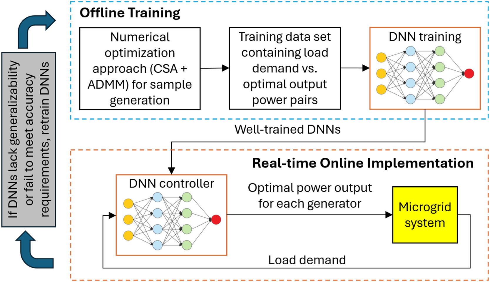
@article{boghrabadi2026deep,
title={A deep learning approach to nonconvex optimal energy management for microgrids},
author={Boghrabadi, Nafiseh Seifi and Wang, Zhenbo and Timilsina, Laxman and Ciftci, Okan and Khan, Asif Ahmed and Papari, Behnaz and Edrington, Chris S},
journal={Electric Power Systems Research},
volume={252},
pages={112466},
year={2026}
}
Journal / SAE
Real-time Analysis of Battery Degradation in a Plug-in Hybrid Electric Vehicles during Vehicle-to-Grid Operation
L. Timilsina, A. Moghassemi, E. Buraimoh, A. Arsalan, S. M. I. Rahman, G. Muriithi, G. Ozkan, B. Papari, C. S. Edrington
Automotive Technical Papers 369401, 2025.
This paper examines the effect of vehicle-to-grid (V2G) integration on battery aging and the economic viability of plug-in hybrid electric vehicles (PHEVs). Real-time simulations are performed in order to validate these results: a grid, a bidirectional charger, and the vehicle battery are modeled in a real-time simulator.
Graphical Abstract:
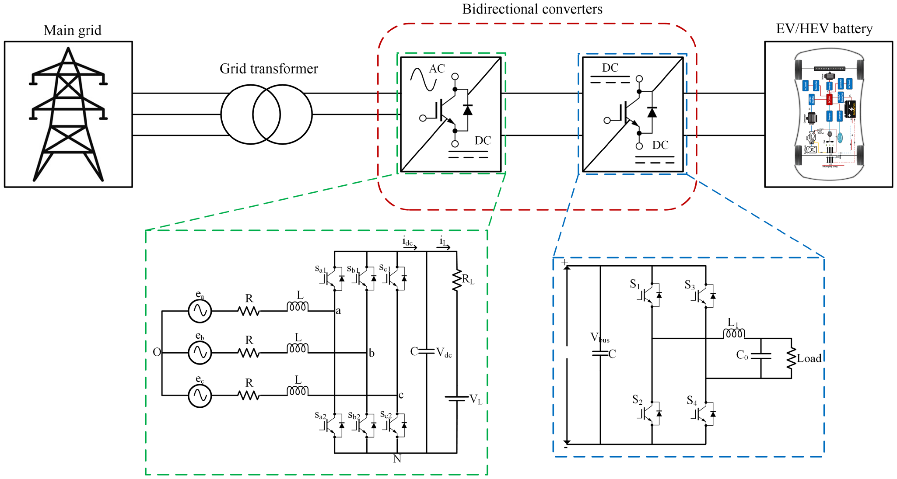
@article{timilsina2025realtime,
title={Real-time Analysis of Battery Degradation in a Plug-in Hybrid Electric Vehicles during Vehicle-to-Grid Operation},
author={Timilsina, Laxman and Moghassemi, A. and Buraimoh, E. and Arsalan, A. and Rahman, S. M. I. and Muriithi, G. and Ozkan, G. and Papari, B. and Edrington, C. S.},
journal={Automotive Technical Papers},
number={369401},
year={2025},
doi={10.4271/2025-01-5079}
}
Journal
Energy Management Systems for Maritime Microgrids: A Comprehensive Review of Intelligent Optimization Strategies
A. A. Khan, L. Timilsina, G. Muriithi, A. Arsalan, A. Moghassemi, B. Papari, G. Ozkan, C. S. Edrington, N. S. Boghrabadi, Z. Wang
IEEE Access, 2025.
In modern maritime operations, electric ship power systems (SPSs) play a crucial role as they integrate distributed energy resources to meet stringent environmental targets while ensuring reliability in dynamic and isolated marine environments. Energy management systems (EMS) are critical to optimizing fuel efficiency, reducing emissions, and maintaining power quality under variable load demands and the harsh conditions in which ships operate. This paper presents a comprehensive review of EMS methodologies for SPS, covering traditional methods such as evolutionary algorithms, model predictive control (MPC), fuzzy logic control, and more modern approaches such as machine learning (ML) and deep learning (DL). ML and DL for EMS offer predictive and adaptive capabilities for real-time optimization, but face limitations in data security and centralized computational demands. Federated learning (FL), which is a decentralized, privacy-preserving paradigm, is a viable solution to the disadvantages of the conventional centralized form of training in ML. FL enables collaborative model training across distributed systems without raw data sharing, addressing critical concerns in cybersecurity and communication overhead. However, FL does require individual devices or clients to have enough computational power to carry out distributed optimization locally. A detailed overview of FL, including the FL training process, categories, architectures and various applications of FL in ship and energy systems, is presented in this paper. To further establish the usefulness of conducting energy management (EM) in ship systems, the paper presents a case study on a notional four-zone DC SPS in which FL has been utilized to collaboratively train DL models across multiple generators without sharing sensitive local data. The results demonstrate better generator output power prediction and effective load management in comparison to the conventional centralized learning setup, indicating the potential of FL to enhance energy efficiency and reliability in ship systems. Finally, some challenges and possible research gaps in applying FL to ship systems are discussed.
Graphical Abstract:
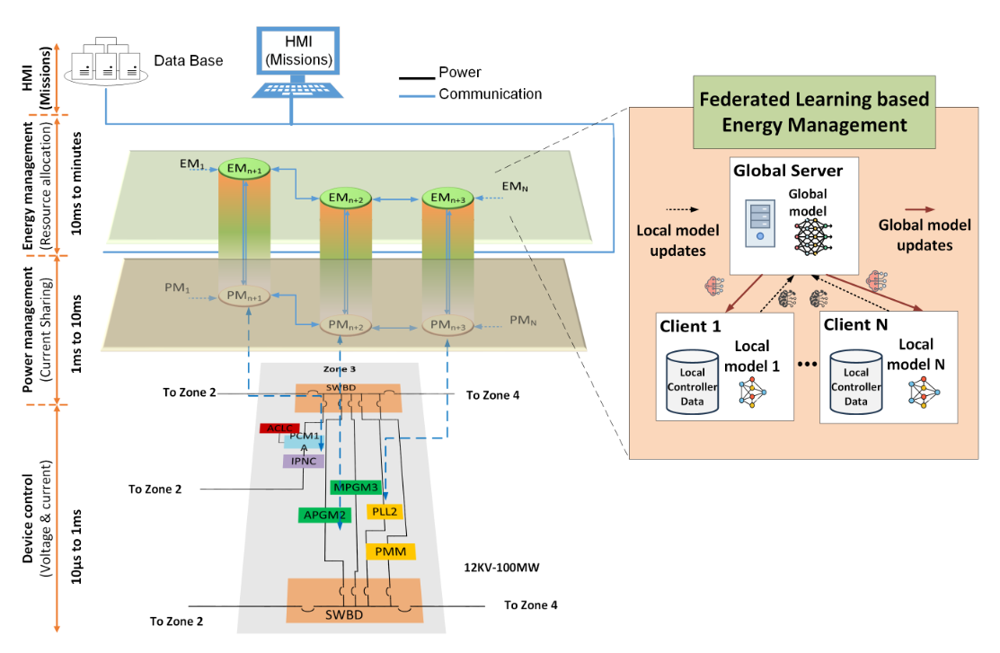
@article{khan2025energy,
title={Energy Management Systems for Maritime Microgrids: A Comprehensive Review of Intelligent Optimization Strategies},
author={Khan, Asif Ahmed and Timilsina, Laxman and Muriithi, Grace and Arsalan, Ali and Moghassemi, Ali and Papari, Behnaz and Ozkan, Gokhan and Edrington, Christpher S and Boghrabadi, Nafiseh Seifi and Wang, Zhenbo},
journal={IEEE Access},
year={2025}
}
Conference
A Deep Reinforcement Learning Framework for Efficient and Resilient Power Management System in Medium Voltage DC Ship Power Systems
K. Bis, L. Timilsina, C. S. Edrington, B. Papari, A. A. Khan, G. Ozkan
2025 IEEE Electric Ship Technologies Symposium (ESTS), pp. 394–401, 2025.
Next-generation naval vessels require highly efficient and robust power management systems to accommodate the dynamic and mission-critical demands of on-board loads. Traditional deterministic control methodologies often struggle to adapt to rapidly changing conditions, leading to suboptimal resource allocation and increased susceptibility to faults. To address these challenges, this paper presents a novel power management framework for a two-zone electric ship power system using a Deep Deterministic Policy Gradient (DDPG) agent implemented in MATLAB's Reinforcement Learning Toolbox. The simplified two-zone Simulink model captures the essential interactions between power generation and load distribution in an electric ship environment, facilitating both agent training and performance evaluation. Preliminary results demonstrate that the proposed DDPG-based power manager achieves enhanced power allocation, fast adaptation to load variations, and improved resilience compared to conventional control strategies.
Graphical Abstract:
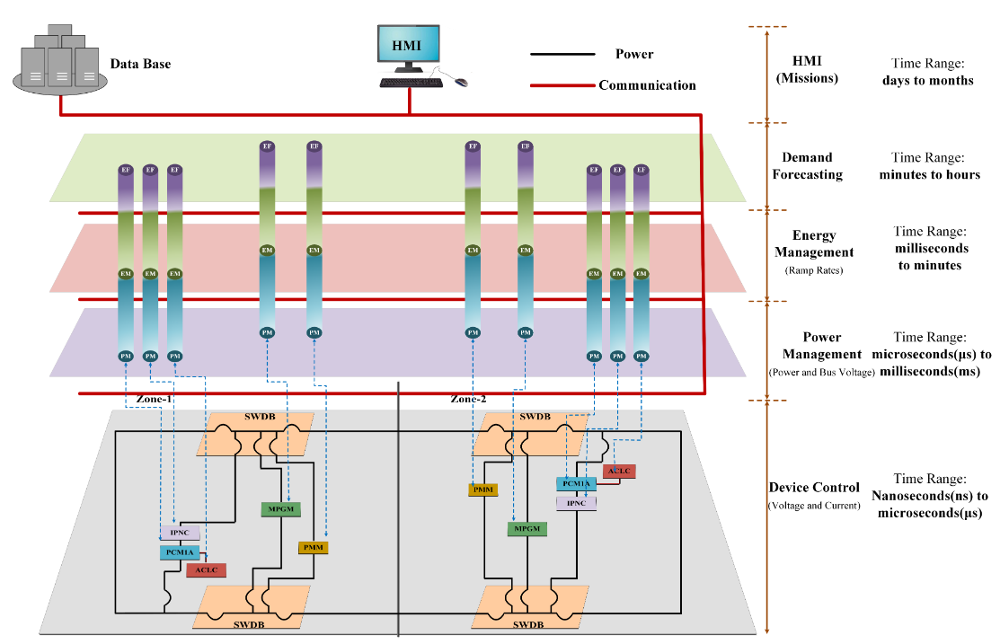
@inproceedings{bis2025deep,
title={A Deep Reinforcement Learning Framework for Efficient and Resilient Power Management System in Medium Voltage DC Ship Power Systems},
author={Bis, Klaudia and Timilsina, Laxman and Edrington, Christopher S and Papari, Behnaz and Khan, Asif Ahmed and Ozkan, Gokhan},
booktitle={2025 IEEE Electric Ship Technologies Symposium (ESTS)},
pages={394--401},
year={2025}
}
Conference
Active Thermal Control via Power Routing of Parallel Inverters in All-Electric Ships
S. M. I. Rahman, M. Ozden, G. Ozkan, A. Moghassemi, L. Timilsina, O. Ciftci, B. Papari, Z. Zhang, C. S. Edrington
2025 IEEE Electric Ship Technologies Symposium (ESTS), pp. 154–161, 2025.
The application of power electronics in all-electric ships (AES) has grown significantly because they offer better control and flexibility. Additionally, Induction Motors (IM) are favored in AESs for their reliability, cost-effectiveness and superior speed and torque tracking performance. The reliability of the power converters in AESs is essential for their safe operation, and this is driving interest in new technologies that ensure safe and reliable PEC performance. One major challenge in achieving reliable PEC operation is the efficient management of generated heat. This includes control of junction temperature and regulation of thermal cycles in power semiconductors. Active Thermal Control (ATC) reduces high junction temperature and thermal cycles by using temperature-related control parameters. This paper presents a closed-loop ATC approach via power routing of parallel DC-AC converters that efficiently distributes the thermal load across various segments of a modular converter, thereby minimizing thermal stress on the most vulnerable components. The effectiveness of the proposed thermal management approach is validated through MATLAB/Simulink results.
Graphical Abstract:
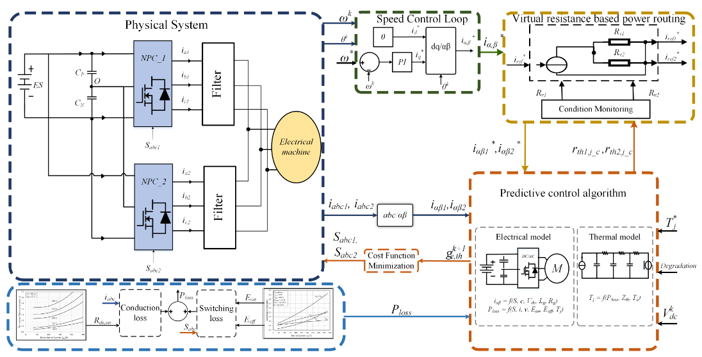
@inproceedings{rahman2025active,
title={Active Thermal Control via Power Routing of Parallel Inverters in All-Electric Ships},
author={Rahman, SM Imrat and Ozden, Mustafa and Ozkan, Gokhan and Moghassemi, Ali and Timilsina, Laxman and Ciftci, Okan and Papari, Behnaz and Zhang, Zheyu and Edrington, Christopher S},
booktitle={2025 IEEE Electric Ship Technologies Symposium (ESTS)},
pages={154--161},
year={2025}
}
Conference
Secure Energy Management for Ship Power Systems Using Federated Learning
A. A. Khan, G. Muriithi, L. Timilsina, A. Moghassemi, B. Papari, C. S. Edrington, G. Ozkan, N. S. Boghrabadi, Z. Wang
2025 IEEE Electric Ship Technologies Symposium (ESTS), pp. 517–524, 2025.
This paper presents a Federated Learning (FL) based Energy Management System (EMS) for Ship Power Systems (SPS). The proposed method addresses the challenges of maintaining a stable power supply while ensuring data privacy, a critical concern in shipboard environments. The FL framework enables collaborative training of Gated Recurrent Unit (GRU) models across multiple generators without sharing sensitive local data. The use of FL, along with mitigating some of the security concerns associated with centralized Machine Learning (ML) configurations, also reduces the computational requirements making the overall framework more scalable. The system was trained using load data from a Medium Voltage DC (MVDC) SPS. The results demonstrate accurate power output prediction and effective load management, indicating the potential of the proposed approach to enhance energy efficiency and reliability in ship systems.
Graphical Abstract:
@inproceedings{khan2025secure,
title={Secure Energy Management for Ship Power Systems Using Federated Learning},
author={Khan, Asif Ahmed and Muriithi, Grace and Timilsina, Laxman and Moghassemi, Ali and Papari, Behnaz and Edrington, Christopher S and Ozkan, Gokhan and Boghrabadi, Nafiseh Seifi and Wang, Zhenbo},
booktitle={2025 IEEE Electric Ship Technologies Symposium (ESTS)},
pages={517--524},
year={2025}
}
Journal
Zero Trust Architecture for Electric Transportation Systems: A Systematic Survey and Deep Learning Framework for Replay Attack Detection
G. Muriithi, B. Papari, A. Arsalan, L. Timilsina, A. Muriithi, E. Buraimoh, A. Khan, G. Ozkan, C. Edrington, A. Papari
IEEE Open Journal of Vehicular Technology, 2025.
Modern and autonomous hybrid electric vehicles (HEVs), as complex cyber-physical systems, represent a key innovation in the future of transportation. However, the increasing interconnectivity and reliance on digital components expose these vehicles to significant cybersecurity risks. To address these challenges, Zero Trust Architecture (ZTA) has emerged as a promising security framework. Operating on the principle of ‘never trust, always verify,’ ZTA offers a comprehensive approach to ensuring continuous trust verification in HEV systems. Despite its potential, the application of ZTA within cyber-physical vehicular systems remains underexplored, and its practical benefits and limitations are not yet fully understood by the engineering community. To bridge this gap, this article presents a detailed survey of ZTA tailored specifically to the needs of vehicular CPSs, highlighting existing technologies, security challenges, and the application of zero-trust principles in HEVs. Additionally, this work proposes a deep learning-based replay attack detection scheme for the battery management system (BMS) of HEVs. The approach leverages a deep learning model to estimate the battery's State of Charge (SoC), analyzing the Error of Estimation using the Inter-Quartile Range (IQR) technique. The detection system analyzes the Error of Estimation using the IQR technique, demonstrating a 74.25% containment ratio and detecting deviations up to 2.39 units during attack scenarios. The system maintains a balanced detection sensitivity with 25.75% detection density. While the proposed method demonstrates high effectiveness in detecting stealth replay attacks through simulation results, it faces certain limitations including computational overhead for real-time processing, dependence on high-quality training data, and potential vulnerability to adversarial attacks on the underlying deep learning model. These challenges highlight the need for careful consideration in practical implementations while opening avenues for future research.
Graphical Abstract:
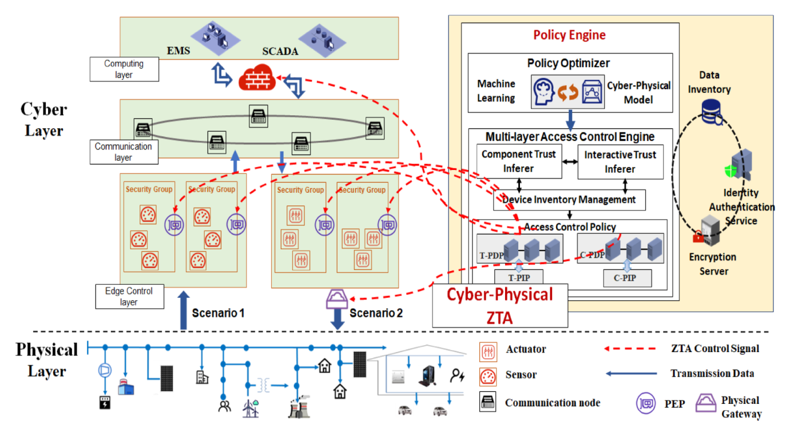
@article{muriithi2025zero, title={Zero Trust Architecture for Electric Transportation Systems: A Systematic Survey and Deep Learning Framework for Replay Attack Detection}, author={Muriithi, Grace and Papari, Behnaz and Arsalan, Ali and Timilsina, Laxman and Muriithi, Alex and Buraimoh, Elutunji and Khan, Asif and Ozkan, Gokhan and Edringto, Christopher and Papari, Akram}, journal={IEEE Open Journal of Vehicular Technology}, year={2025}}
Journal
Adaptive Multi-Parameter Model-Free Delay Compensation in Damping Impedance Interfaced Distributed Power System Co-Simulation
E. Buraimoh, G. Ozkan, L. Timilsina, G. Muriithi, A. Moghassemi, A. Arsalan, S. M. I. Rahman, B. Papari, M. Ozden, C. Edrington
IEEE Transactions on Power Systems, 2025.
Virtual integration of geographically dispersed laboratories through real-time co-simulation presents powerful capabilities for co-simulating massive complex systems but it is hindered by communication delays that compromise accuracy and stability. This challenge is particularly concerning for real-time power system co-simulation, where delays can induce synchronization loss and limit dynamic and transient studies. This study proposes an adaptive, multi-parameter model-free framework for predicting and compensating delays in co-simulated systems, addressing this critical issue. This framework leverages the improved damping impedance method interface algorithm and an adaptive, parameter-tuning predictor system that predicts and compensates for delays without requiring complex interface signal transformation, processing, decomposition, reconstruction, phase estimation, system models, and no human interference. The proposed approach is validated using a joint experiment between two laboratories at Clemson, SC, USA and Greenville, SC, USA, with the Damping Impedance Method as an Interface Algorithm between the two partitioned subsystems. The coupling errors, state tracking errors, and residual complex power are used as evaluation metrics for the proposed delay compensation. This approach enhances co-simulation accuracy and stability, facilitating reliable dynamic and transient analyses.
Graphical Abstract:
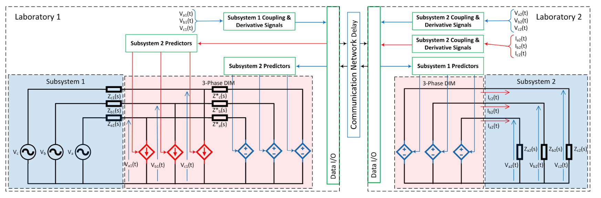
@article{buraimoh2025adaptive, title={Adaptive Multi-Parameter Model-Free Delay Compensation in Damping Impedance Interfaced Distributed Power System Co-Simulation}, author={Buraimoh, Elutunji and Ozkan, Gokhan and Timilsina, Laxman and Muriithi, Grace and Moghassemi, Ali and Arsalan, Ali and Rahman, SM Imrat and Papari, Behnaz and Ozden, Mustafa and Edrington, Christopher}, journal={IEEE Transactions on Power Systems}, year={2025}}
Journal
Junction Temperature Prediction Model Development with Co-Simulation
M. Ozden, G. Ozkan, S. M. I. Rahman, E. Buraimoh, L. Timilsina, B. Papari, C. S. Edrington
e-Prime - Advances in Electrical Engineering, Electronics and Energy, vol. 12, p. 101033, 2025.
This study examines the thermal behavior and junction temperature of MOSFET modules under varying operating conditions using ANSYS/Fluent software, with simulations managed through Python/Jupyter Notebook. Two different approaches are evaluated: the Temperature-Responsive Power Loss Calculation (TRPLC) and the Temperature-Agnostic Power Loss Calculation (TAPLC). In the TRPLC approach, power loss is calculated as a function of the junction temperature, which is updated at each time step. In contrast, the TAPLC approach relies on four predefined power loss curves derived from the MOSFET datasheet, with each curve simulated separately. Unlike TRPLC, this method does not account for the relationship between junction temperature and power loss, resulting in significantly high junction temperature values at higher power loss levels. By dynamically recalculating power loss at every step, the TRPLC approach provides more realistic results compared to TAPLC. These findings underscore the importance of incorporating temperature-dependent calculations to enhance the accuracy of thermal performance predictions under practical operational scenarios.
Graphical Abstract:
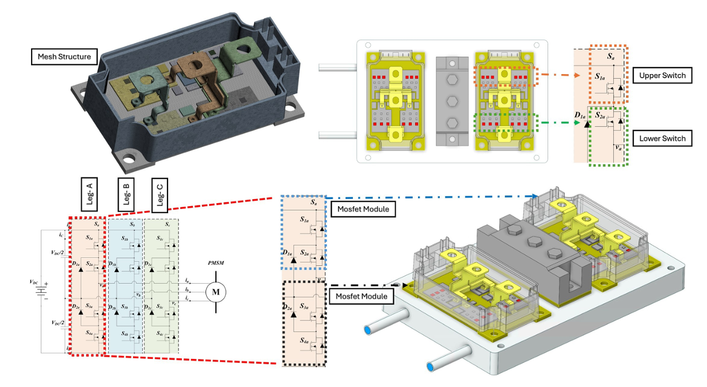
@article{ozden2025junction, title={Junction temperature prediction Model Development with Co-simulation}, author={Ozden, Mustafa and Ozkan, Gokhan and Rahman, SM Imrat and Buraimoh, Elutunji and Timilsina, Laxman and Papari, Behnaz and Edrington, Christopher S}, journal={e-Prime-Advances in Electrical Engineering, Electronics and Energy}, volume={12}, pages={101033}, year={2025}}
Journal
Real-time Improved Nearest Level Control for Power Electronics Building Blocks in All-Electric Ship Power Systems
A. Moghassemi, L. Timilsina, S. M. I. Rahman, A. Arsalan, G. Muriithi, E. Buraimoh, G. Ozkan, B. Papari, C. S. Edrington, Z. Zhang
IEEE Transactions on Industry Applications, 2025.
Power electronics building block (PEBB) concept involves integrating fundamental components into functional blocks that can be stacked, extending converter power ratings for all-electric ships (AESs). This modular approach reduces costs, size, weight, design complexity, and maintenance. PEBBs can be realized as modular multi-level converters (MMCs), which offer advantages like modularity, low switching losses, minimal voltage/current quantization, high reliability, and efficiency. However, effective switching control methods are crucial to balance capacitor voltages and suppress circulating currents. This paper proposes an improved nearest level control (NLC) method that employs smoothed trapezoidal reference signals instead of sinusoidal references, aiming to enhance capacitor voltage balancing, suppress circulating currents, and improve the output power quality of PEBBs in AESs. The proposed NLC method is analyzed in real-time for an N-level PEBB connected to an induction machine (IM) with variable speed and torque load. The real-time verification is conducted in the Typhoon HIL606 digital real-time simulator (DRTS). The results validate the feasibility and effectiveness of the proposed NLC method for a three-phase N-level PEBB concept for AESs.
Graphical Abstract:
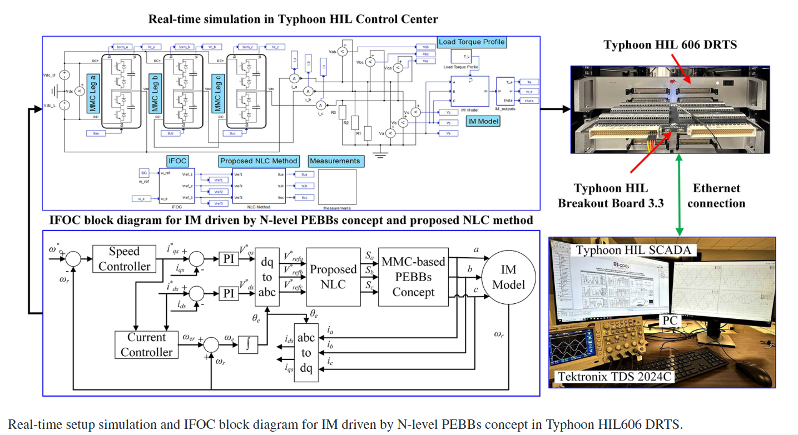
@article{moghassemi2025real, title={Real-time Improved Nearest Level Control for Power Electronics Building Blocks in All-Electric Ship Power Systems}, author={Moghassemi, Ali and Timilsina, Laxman and Rahman, SM Imrat and Arsalan, Ali and Muriithi, Grace and Buraimoh, Elutunji and Ozkan, Gokhan and Papari, Behnaz and Edrington, Christopher S and Zhang, Zheyu and others}, journal={IEEE Transactions on Industry Applications}, year={2025}}
Journal
Reliability Score Benchmarking and Resistive Loss Profile-Based Open-Circuit Fault Diagnosis Approach for Motor Drive System
A. Arsalan, B. Papari, L. Timilsina, G. Muriithi, A. Moghassemi, S. M. I. Rahman, E. Buraimoh, G. Ozkan, C. S. Edrington
IEEE Transactions on Power Electronics, 2025.
In recent years, data-driven methods have shown promise in diagnosing various open circuit fault (OCF) modes in inverter drive applications. However, existing studies primarily evaluate the reliability of these methods based solely on classification accuracy, neglecting critical real-time factors, such as computational delays and data transfer latency associated with the data-driven approach and communication protocols, respectively, which can affect real-time operational reliability. This article addresses these gaps by proposing a universally applicable reliability score criterion that integrates classification accuracy with system timing profiles. In addition, a model predictive control strategy employing active thermal management (ATM) is applied to the drive system, enabling a detailed analysis of the impact of OCF modes on the junction temperature of mosfets. Moreover, a novel feature extraction dataset is introduced, leveraging resistive/conduction loss data from the ATM scheme without requiring signal preprocessing. The proposed reliability score quantification and the dataset's diagnostic potential are validated using various data-driven classifiers. The most reliable classifier, achieving a 99.95% diagnosis accuracy, is further tested under diverse operating conditions using a control hardware-in-the-loop setup on an OPAL-RT testbed and Raspberry Pi.
Graphical Abstract:
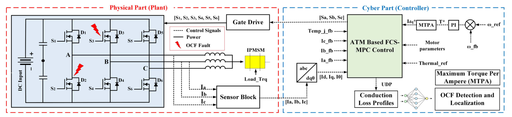
@article{arsalan2025reliability, title={Reliability score benchmarking and resistive loss profile-based open-circuit fault diagnosis approach for motor drive system}, author={Arsalan, Ali and Papari, Behnaz and Timilsina, Laxman and Muriithi, Grace and Moghassemi, Ali and Rahman, SM Imrat and Buraimoh, Elutunji and Ozkan, Gokhan and Edrington, Christopher S}, journal={IEEE Transactions on Power Electronics}, year={2025}}
Journal
Analysis of Model Free Predictors for Interface Signal Delay Compensation in Real-Time Cosimulation
E. Buraimoh, G. Ozkan, L. Timilsina, G. Muriithi, B. Papari, A. Arsalan, A. Moghassemi, M. Ozden, C. Edrington
IEEE Transactions on Industrial Informatics, vol. 21, no. 4, pp. 3448–3457, 2025.
Real-time cosimulation of geographically dispersed laboratories enables extensive system simulations but faces significant challenges from communication delays, impacting accuracy and stability. This issue is crucial in real-time power system cosimulation, where delays can disrupt synchronism and hinder dynamic analyses. This article proposes model-free predictive delay compensation methods as viable alternative signal transformation-based methods. This study explores the frequency domain stability of a model-free framework for delay prediction and compensation at power system interfaces using the ideal transformer method as interface algorithm. Similarly, time-domain implementation reveals signal amplitude magnification, addressed by introducing a delay- and frequency-dependent normalizing factor. This framework adapts interface coupling signals, enabling real-time parameter tuning without complex processing or system models, enhancing co-simulation accuracy and stability for distributed power system analyses.
Graphical Abstract:
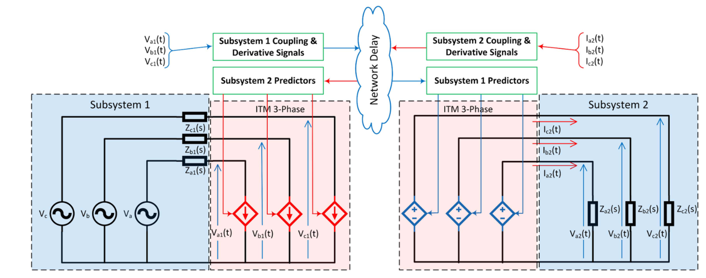
@article{buraimoh2025analysis, title={Analysis of model free predictors for interface signal delay compensation in real-time cosimulation}, author={Buraimoh, Elutunji and Ozkan, Gokhan and Timilsina, Laxman and Muriithi, Grace and Papari, Behnaz and Arsalan, Ali and Moghassemi, Ali and Ozden, Mustafa and Edrington, Christopher}, journal={IEEE Transactions on Industrial Informatics}, volume={21}, number={4}, pages={3448--3457}, year={2025}}
Conference
Hybrid Electric Vehicle Simulation Operation Across Distributed Laboratories using Hardware Integrated Virtual Environment Concept
L. Timilsina, E. Buraimoh, A. Moghassemi, S. M. I. Rahman, A. Arsalani, G. Muruthii, O. Ciftci, G. Ozkan, B. Papari, C. S. Edrington
2024 IEEE 9th Southern Power Electronics Conference (SPEC), pp. 1–8, 2024.
The research on hybrid electric vehicles (HEVs) poses significant cost challenges due to the necessity of assembling various components and ensuring the fidelity of the entire system, especially when testing new algorithms or integrating additional devices. In research institutes, different laboratories may specialize in hardware or control aspects of HEVs, with some possessing most components while others lack certain elements. This fragmented distribution often necessitates purchasing all components, increasing research expenses substantially. To address this issue, this paper presents a framework introducing the concept of a hardware-integrated virtual environment (HIVE) that facilitates the virtual connection of components dispersed across multiple locations, enabling comprehensive research on the entire vehicle system without physical integration. To test this framework, this study utilizes a series HEV model developed in MATLAB, which is operated in real-time using Speedgoat, a digital real-time simulator. One laboratory possesses all the vehicle components except for the battery, while another laboratory houses the missing battery component, also developed in MATLAB and operated in real-time using Speedgoat. This study successfully establishes connectivity between the two laboratories, enabling the seamless operation of the entire HEV model across distributed locations.
Graphical Abstract:
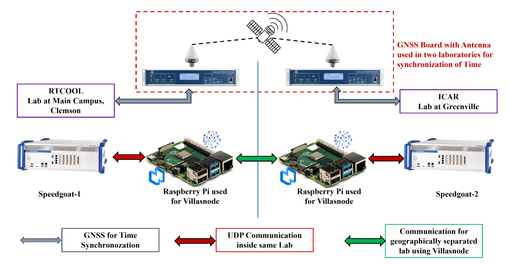
@inproceedings{timilsina2024hybrid, title={Hybrid Electric Vehicle Simulation Operation Across Distributed Laboratories using Hardware Integrated Virtual Environment Concept}, author={Timilsina, Laxman and Buraimoh, Elutunji and Moghassemi, Ali and Rahman, SM Imrat and Arsalani, Ali and Muruthii, Grace and Ciftci, Okan and Ozkan, Gokhan and Papari, Behnaz and Edrington, Christopher S and others}, booktitle={2024 IEEE 9th Southern Power Electronics Conference (SPEC)}, pages={1--8}, year={2024}}
Conference
Prediction of State of Charge of Battery in Electric Vehicles Using Artificial Neural Network
R. Chaudhary, S. Kunwar, P. B. Thapa, S. R. Magar, A. Khadka, S. Khan, L. Timilsina
2024 IEEE International Conference on Power System Technology (PowerCon), pp. 1–5, 2024.
The trajectory of today’s world is towards emission-free energy sources. The result is a huge growth in the number of Electric Vehicles (EVs) experienced around the world. However, the batteries in EVs must be properly operated to extend their lifetime for which an accurate estimation of the State of Charge (SOC) of the cell is crucial. The conventional methods of SOC estimation are either less accurate or computationally complex. This paper presents a method of estimating the SOC of a Li-ion cell used in EVs employing an Artificial Neural Network (ANN) model which is tested in a 1-RC Equivalent Circuit Model (ECM) of a cell in MATLAB, SIMULINK. The model uses the measured current, voltage, and temperature, and predicts SOC based on these quantities. The first input feature for the ANN model is the power, which is calculated by multiplying the current and voltage. The average voltage and current over 600 timestep intervals are used as the second and third features, respectively. Additionally, the fourth input feature is the temperature. The performance of the model is tested against experimental data.
Graphical Abstract:
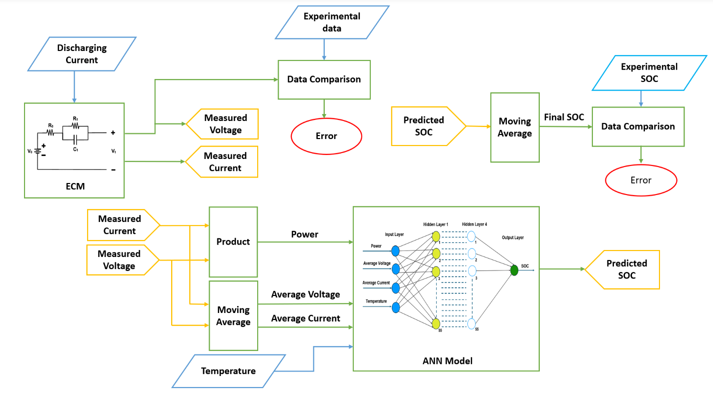
@inproceedings{chaudhary2024prediction, title={Prediction of State of Charge of Battery in Electric Vehicles Using Artificial Neural Network}, author={Chaudhary, Rabin and Kunwar, Sanjeev and Thapa, Padam Bahadur and Magar, Sangam Rana and Khadka, Anish and Khan, Shahabuddin and Timilsina, Laxman}, booktitle={2024 IEEE International Conference on Power System Technology (PowerCon)}, pages={1--5}, year={2024}}
Journal
Vulnerability Assessment and Detection of Stealthy Sequential Cyberattacks in Hybrid Tracked Vehicles
G. Muriithi, B. Papari, A. Moghassemi, A. Sundar, A. Arsalan, E. Buraimoh, L. Timilsina, G. Ozkan, C. Edrington
IEEE Transactions on Transportation Electrification, vol. 11, no. 2, pp. 6472–6489, 2024.
This article presents an innovative approach to improve hybrid powertrains’ cyber-physical security for high-speed, tracked, off-road vehicles against subtle and sophisticated cyberattacks. While cyber threats against hybrid tracked vehicles (HTVs) have been acknowledged, exploring advanced cyberattacks targeting battery lifetime and energy efficiency within the powertrain remains underexplored. This article proposes a dual-pronged intelligent methodology to construct novel FDIAs targeting vehicle control decisions from the energy management system (EMS). The optimal cyberattack strategy by a minimally informed adversary is formulated as a partial observable Markov decision process (POMDP), employing deep reinforcement learning (DRL) for online learning and attacking. Simultaneously, a comprehensive reward system is devised that incorporates sniffing features to elevate the stealthiness and efficacy of the cyberattacks. This augmentation ensures that the orchestrated attack vectors remain inconspicuous to human drivers. Evaluation metrics are formulated to assess the impact and stealth characteristics of the cyberattack. Furthermore, a sliding window-based controller data monitoring scheme combining iForest and dynamic time warping (DTW) algorithms is proposed to automatically detect the stealthy FDIAs in real-time, ensuring secure control of energy-efficient powertrain systems. Through the proposed metrics and detection module, the article thoroughly examines the impact of cyberattacks on the energy consumption of the HTV. It also provides vital insights for defending vehicles that operate in austere environments against sophisticated controller attacks.
Graphical Abstract:
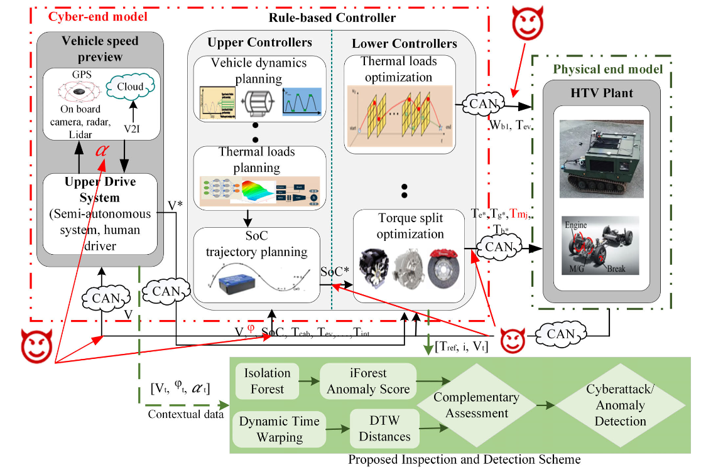
@article{muriithi2024vulnerability, title={Vulnerability assessment and detection of stealthy sequential cyberattacks in hybrid tracked vehicles}, author={Muriithi, Grace and Papari, Behnaz and Moghassemi, Ali and Sundar, Anirudh and Arsalan, Ali and Buraimoh, Elutunji and Timilsina, Laxman and Ozkan, Gokhan and Edrington, Christopher}, journal={IEEE Transactions on Transportation Electrification}, volume={11}, number={2}, pages={6472--6489}, year={2024}}
Journal
Enhanced Real-Time ATM-Based MPC for Electric Vehicles With Cyber–Physical Security Aspect
A. Arsalan, B. Papari, L. Timilsina, G. Muriithi, A. Moghassemi, S. M. I. Rahman, E. Buraimoh, G. Ozkan, C. S. Edrington
IEEE Transactions on Transportation Electrification, vol. 11, no. 1, pp. 4698–4716, 2024.
Inverter-based electric drive systems (EDSs) in electric vehicles (EVs) are susceptible to various common cyber and physical anomalies (CPAs), such as cyberattacks (CAs) and open-circuit faults (OCFs) in power switches. Most existing data-driven diagnostic schemes for motor drives solely rely on residual and three-phase output current signals and are prone to misclassification due to overlapping data features associated with these anomalies. Moreover, these methods concentrate on detecting either CAs or OCFs independently, lacking a unified approach that can be universally applied to both types of anomalies. Therefore, in this work, a physics-informed machine learning (PIML) approach is proposed, which can effectively distinguish between CAs and OCFs in EDS. In this regard, the unique features associated with stator current, resulting from various CPAs, are used to estimate the stator voltage characteristics through a synchronous motor mathematical model. The proposed voltage-based features characterizing better correlation via distinctive EDS transients in response to these anomalies are further used as the system’s prior information by a machine learning (ML) classifier. Moreover, active thermal management (ATM)-based model predictive control (MPC) is utilized in the control layer due to its benefits in device-level thermal cycling and power quality. In addition, various variations in electrical, mechanical, and thermal characteristics due to CPAs in EDS have also been analyzed. The presented approach is evaluated for the US06 standard drive cycle in real time via controller-hardware-in-the-loop (CHIL) experiment for various case study scenarios, resulting in a classification accuracy of 98.92%.
Graphical Abstract:
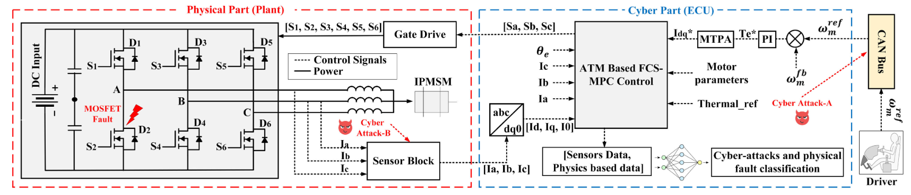
@article{arsalan2024enhanced, title={Enhanced Real-Time ATM-Based MPC for Electric Vehicles With Cyber--Physical Security Aspect}, author={Arsalan, Ali and Papari, Behnaz and Timilsina, Laxman and Muriithi, Grace and Moghassemi, Ali and Rahman, SM Imrat and Buraimoh, Elutunji and Ozkan, Gokhan and Edrington, Christopher S}, journal={IEEE Transactions on Transportation Electrification}, volume={11}, number={1}, pages={4698--4716}, year={2024}}
Conference
Degradation and State of Health Prediction of a Battery Used in a Microgrid in Real-time
L. Timilsina, A. Moghassemi, E. Buraimoh, S. M. I. Rahman, A. A. Khan, G. Muriithi, G. Ozkan, B. Papari, C. S. Edrington
2024 IEEE Sixth International Conference on DC Microgrids (ICDCM), pp. 1–7, 2024.
Battery degradation is a complex physicochemical phenomenon intricately influenced by operational parameters and environmental factors. This paper delves into the degradation of lithium-ion batteries within microgrid systems, utilizing historical aging data from the University of Wisconsin-Madison to train a degradation model employing neural networks. The dataset is transformed to align with the battery pack rating pertinent to this investigation. The study identifies and examines several contributing factors to battery degradation, with a specific focus on temperature, charging current, discharging current, and depth of discharge. Emphasizing the significance of these parameters, particularly the latter three, the research endeavors to predict battery degradation in diverse operational conditions within a Microgrid system. This study modeled a Microgrid configuration capable of operating in islanded and grid-connected mode featuring solar PV, wind, a diesel generator, and a battery. Real-time simulations of different operational scenarios are conducted using the digital real-time simulator. Additionally, the battery's operational status is sent to a controller to predict its degradation and state of health. The controller used here is a Raspberry Pi, and communication is facilitated through UDP protocol.
Graphical Abstract:
@inproceedings{timilsina2024degradation, title={Degradation and State of Health Prediction of a Battery Used in a Microgrid in Real-time}, author={Timilsina, Laxman and Moghassemi, Ali and Buraimoh, Elutunji and Rahman, SM Imrat and Khan, Asif Ahmed and Muriithi, Grace and Ozkan, Gokhan and Papari, Behnaz and Edrington, Christopher S}, booktitle={2024 IEEE Sixth International Conference on DC Microgrids (ICDCM)}, pages={1--7}, year={2024}}
Conference
Heuristic Evolutionary Optimization for Control and Management of Renewable-Based Hybrid Microgrids
A. Moghassemi, L. Timilsina, D. Scruggs, A. Arsalan, S. M. I. Rahman, A. A. Khan, O. Ciftci, B. Papari, G. Ozkan, C. S. Edrington
2024 IEEE Sixth International Conference on DC Microgrids (ICDCM), pp. 1–8, 2024.
The surge in renewable energy and distributed generation necessitates advanced control systems for network performance enhancement. However, the lack of a standardized evaluation framework hampers comparisons, especially in complex hybrid networks. Hybrid energy systems offer greener and more reliable networks but require sophisticated control methods. To address this challenge, research explores novel linear and nonlinear techniques. This overview focuses on heuristic evolutionary optimization methods for Microgrids, covering AC, DC, and hybrid AC-DC systems, highlighting current research and future control requirements.
Graphical Abstract:
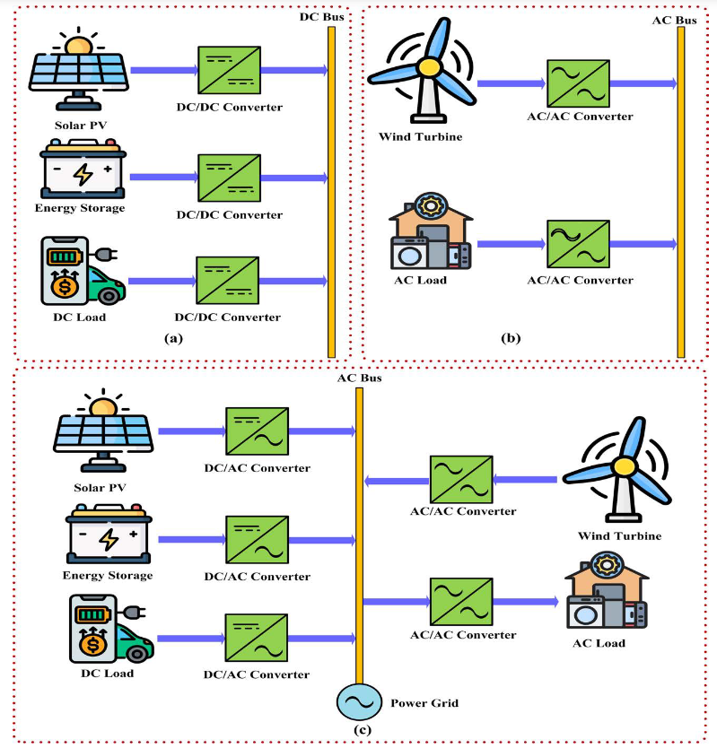
@inproceedings{moghassemi2024heuristic, title={Heuristic evolutionary optimization for control and management of renewable-based hybrid microgrids}, author={Moghassemi, Ali and Timilsina, Laxman and Scruggs, Douglas and Arsalan, Ali and Rahman, SM Imrat and Khan, Asif Ahmed and Ciftci, Okan and Papari, Behnaz and Ozkan, Gokhan and Edrington, Christopher S}, booktitle={2024 IEEE Sixth International Conference on DC Microgrids (ICDCM)}, pages={1--8}, year={2024}}
Conference
Distributed Deep Deterministic Policy Gradient Agents for Real-Time Energy Management of DC Microgrid
E. Buraimoh, G. Ozkan, L. Timilsina, G. Muriithi, A. Arsalan, B. Papari, A. Moghassemi, C. Edrington, M. Ozden
2024 IEEE Sixth International Conference on DC Microgrids (ICDCM), pp. 1–5, 2024.
This paper presents a real-world military use of a microgrid with Vehicle-to-Grid (V2G) and Vehicle-to-Vehicle (V2V). This plug-and-play system delivers efficient, fast-deploying power for a contingency base within 20 minutes, generating up to 500 kW of three-phase power. It utilizes vehicle-based Internal Combustion (IC) engine generators and an Energy Storage System (ESS) to power vehicle equipment and off-board loads like shelters and communication centers. However, fluctuating off-board loads create operational challenges for this V2G-V2V microgrid. This work proposes a real-time implementation of energy management based on distributed Deep Deterministic Policy Gradient (DDPG), a deep reinforcement learning, to address this problem for continuous state and continuous action spaces. This work formulates the energy management problem as a Markov decision process, considering random load demands and fuel costs. This paper aims to minimize the microgrid's operating costs by optimizing the dispatch of onboard vehicle power generators and storage units. With simulation experiments, this work demonstrates the effectiveness of the proposed distributed deep reinforcement learning approach. The results show the distributed DDPG agents can utilize the state of the ESS and significantly decrease the microgrid's overall operation costs. This validates the practical value of distributed DDPG for economic operations in military microgrids.
Graphical Abstract:
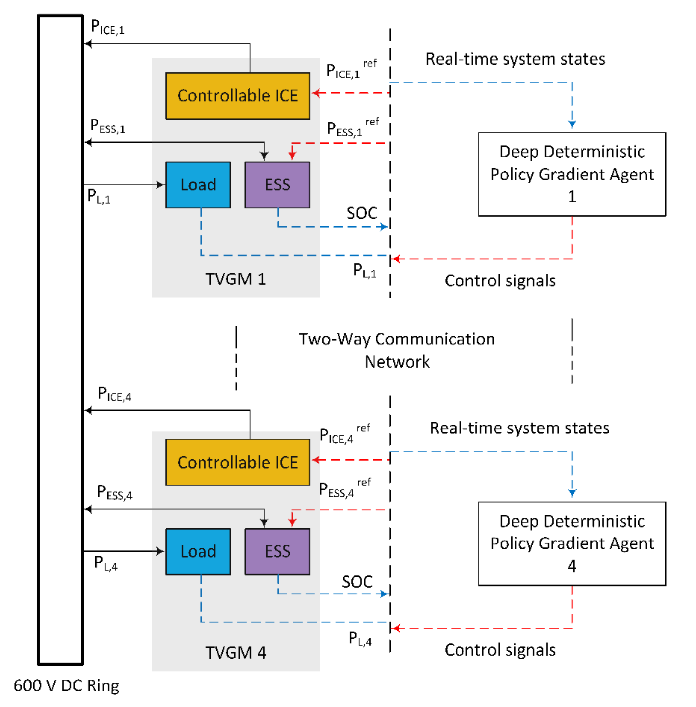
@inproceedings{buraimoh2024distributed, title={Distributed deep deterministic policy gradient agents for real-time energy management of DC microgrid}, author={Buraimoh, Elutunji and Ozkan, Gokhan and Timilsina, Laxman and Muriithi, Grace and Arsalan, Ali and Papari, Behnaz and Moghassemi, Ali and Edrington, Christopher and Ozden, Mustafa}, booktitle={2024 IEEE Sixth International Conference on DC Microgrids (ICDCM)}, pages={1--5}, year={2024}}
Journal
Neural Network-Based Cyber-Threat Detection Strategy in Four Motor-Drive Autonomous Electric Vehicles
D. G. Scruggs, L. Timilsina, B. Papari, A. Arsalan, G. Muriithi, G. Ozkan, C. S. Edrington
IEEE Access, vol. 12, pp. 124220–124230, 2024.
Autonomous electric vehicles provide benefits to both drivers and the environment compared to conventional vehicles; however, they are burdened with an increase in potential pathways for cyber-attacks. Therefore, reliable cyber-security strategies for these vehicles must be pursued. This paper addresses this concern by implementing a threat detection strategy that utilizes an observer and a neural network. These tools monitor discrepancies between the vehicle’s lateral metrics, which are produced via sensor data, neural network output, and an observer. Previous literature focuses on physics-based analytics to create the threat decision, but here, a data based approach is utilized. The vehicle used in this study is a four-motor-drive autonomous electric vehicle that is propelled with brushless DC motors. The motors are controlled by direct torque control. In this study, three forms of cyber-attacks are implemented. These include data integrity attacks, replay attacks, and denial-of-service attacks. A performance metric is also created, which indicates the data-driven approach outperforms the physics-based approaches. All modeling and simulation were conducted in the MATLAB/Simulink environment.
Graphical Abstract:
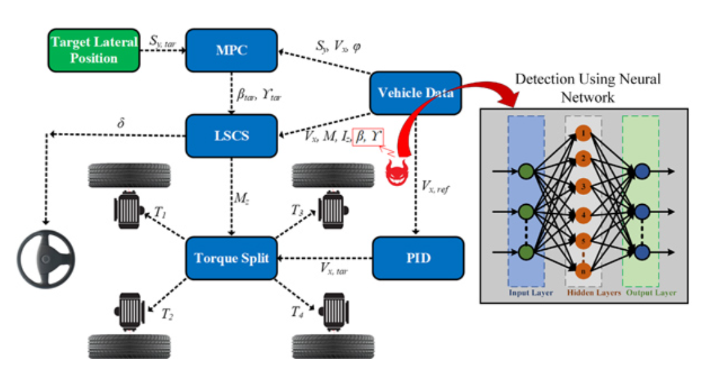
@article{scruggs2024neural, title={Neural network-based cyber-threat detection strategy in four motor-drive autonomous electric vehicles}, author={Scruggs, Douglas G and Timilsina, Laxman and Papari, Behnaz and Arsalan, Ali and Muriithi, Grace and Ozkan, Gokhan and Edrington, Christopher S}, journal={IEEE Access}, volume={12}, pages={124220--124230}, year={2024}}
Journal / SAE
Impact Analysis of Cyberattacks in Electric Propulsion Systems for Hybrid Tracked Vehicles
G. Muriithi, B. Papari, A. Arsalan, A. Khan, E. Buraimoh, G. Ozkan, L. Timilsina, C. Edrington
SAE Technical Paper, Tech. Rep., 2024.
In the age of advancing digitalization and integrating complex electronics within modern vehicles, hybrid tracked vehicles (HTVs) are increasingly becoming susceptible to cybersecurity threats. Particularly vulnerable are the control units, which have become prime targets for adversarial exploitation due to their pivotal role in vehicle functionality. To address these security concerns, this study demonstrates two distinct yet equally harmful scenarios using replay and DoS attacks to uncover and evaluate vulnerabilities within the Energy Management System (EMS) of HEVs. In the replay attack scenario, the adversary surreptitiously alters the SoC control messages emanating from the Battery Management System (BMS). The attack is calibrated to strategically time and sequence the message replays across various operational states using reinforcement learning, thereby maintaining apparent legitimacy within expected SoC ranges to evade detection. The DoS attack, however, presents a more direct threat by targeting the generator’s revolution speed sensors. By compromising these sensors, the attack disrupts the generator and causes subsequent engine shutdowns, compelling the battery to singularly meet the vehicle’s power supply demands. Formal attack models are developed and subsequently deployed on a simulated HTV platform within MATLAB/Simulink to analyze the impacts of these cyberattacks. The simulation results illustrate the impacts of the simulated cyberattacks, further reinforcing the importance of resilient and adaptive security measures for the control layer.
Graphical Abstract:
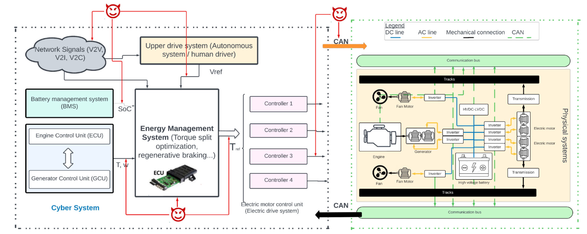
@article{muriithi2024impact, title={Impact analysis of cyberattacks in electric propulsion systems for hybrid tracked vehicles}, author={Muriithi, Grace and Papari, Behnaz and Arsalan, Ali and Khan, Asif and Buraimoh, Elutunji and Ozkan, Gokhan and Timilsina, Laxman and Edrington, Christopher}, journal={SAE Technical Paper, Tech. Rep}, year={2024}}
Conference
Reliable Fault-Tolerant Distributed Control for Traction IPMSM in Electric Vehicle/Hybrid Electric Vehicle
L. Timilsina, P. R. Badr, A. Arsalan, G. Ozkan, B. Papari, C. S. Edrington
2024 IEEE Transportation Electrification Conference and Expo (ITEC), pp. 1–6, 2024.
Electrical motors are used to provide traction power in electric/hybrid electric vehicles (EV/HEV). This paper introduces the concept of a distributed framework in which the task of traction drive control is shared between the local controllers. So, if one of the controllers is lost due to unforeseen circumstances such as faults, the neighboring agents can still drive the affected traction motor(s). Inverted-fed interior permanent magnet synchronous motors (IPMSM) are widely used for EV/HEV traction and are considered in a notional two-agent traction system case study. Each IPMSM controller includes a PI speed loop, a maximum torque per-ampere (MTPA) current reference generator, and space vector modulation (SVM) for inverter gate drive. The distributed framework generates global feedback variables between the neighboring agents to generate consensus input/output variables. Simulation results in the case study show promising reliability advantages in applying the proposed traction drive control framework.
Graphical Abstract:
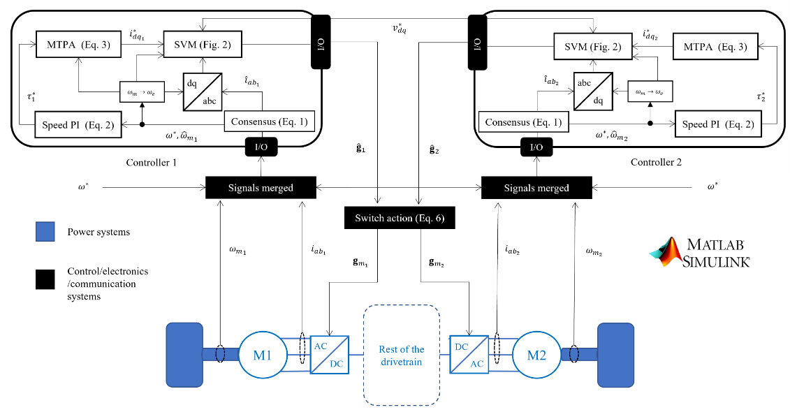
@inproceedings{timilsina2024reliable, title={Reliable Fault-tolerant Distributed Control for Traction IPMSM in Electric Vehicle/Hybrid Electric Vehicle}, author={Timilsina, Laxman and Badr, Payam R and Arsalan, Ali and Ozkan, Gokhan and Papari, Behnaz and Edrington, Christopher S}, booktitle={2024 IEEE Transportation Electrification Conference and Expo (ITEC)}, pages={1--6}, year={2024}}
Conference
Nearest Level Control Based Modular Multi-Level Converters for Power Electronics Building Blocks Concept in Electric Ship System
A. Moghassemi, L. Timilsina, S. M. I. Rahman, A. Arsalan, P. K. Chamarthi, G. Ozkan, B. Papari, C. S. Edrington, Z. Zhang
2024 IEEE Transportation Electrification Conference and Expo (ITEC), pp. 1–6, 2024.
Power electronics building blocks (PEBBs) involve the integration of fundamental components into blocks with defined functionality, stacked in series and parallel, to extend converter power ratings to meet naval ship systems’ various power conversion needs. The PEBBs concept in literature is based on modular multilevel converters (MMCs). MMCs are promising candidates for medium and high-power system applications owing to their unique features, such as modularity/scalability/simplicity in structure, low switching losses, low quantization on voltage/current, high reliability, and high efficiency. However, a promising switching control method is required in MMCs to balance the capacitor voltage and suppress the circulating current. This paper presents the nearest level control (NLC) method for the PEBBs concept in modern electric ship systems to simultaneously improve capacitor voltage balancing, circulating current, and power quality. The simulation is conducted in MATLAB/Simulink software. A three-phase five-level MMC converter is considered for the simulation to analyze and compare the converter’s performance based on the proposed NLC and traditional sinusoidal pulse-width modulation (SPWM) switching methods.
Graphical Abstract:
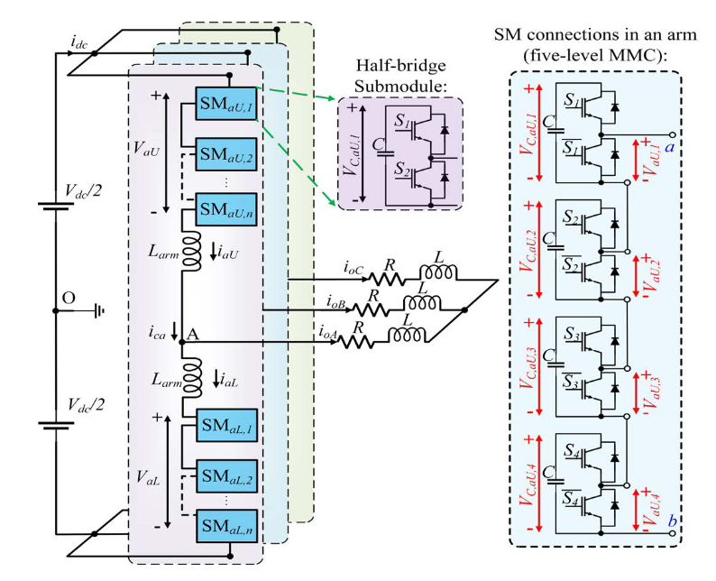
@inproceedings{moghassemi2024nearest, title={Nearest level control based modular multi-level converters for power electronics building blocks concept in electric ship system}, author={Moghassemi, Ali and Timilsina, Laxman and Rahman, SM Imrat and Arsalan, Ali and Chamarthi, Phani Kumar and Ozkan, Gokhan and Papari, Behnaz and Edrington, Christopher S and Zhang, Zheyu}, booktitle={2024 IEEE Transportation Electrification Conference and Expo (ITEC)}, pages={1--6}, year={2024}}
Conference
A Proposed Cuk Converter Based Dual Input Hybrid Converter Topology as EV Charging Station
P. K. Chamarthi, S. M. I. Rahman, A. Moghassemi, L. Timilsina, O. Ciftci, B. Papari, G. Ozkan, C. S. Edrington
2024 IEEE Transportation Electrification Conference and Expo (ITEC), pp. 1–6, 2024.
The considerable advancement in electric vehicles (EVs) and constant reduction of prices for solar photovoltaic (PV) modules has raised interest in integrating PV modules to the EV chargers. In this paper a new Cuk based hybrid converter topology (CHCT) is proposed as an EV charger. The proposed CHCT consists of a PV source and 1-ϕ AC grid as two main energy sources. The main advantage of CHCT configuration is that it uses the optimal number of power components (i.e., five power switches, three inductors and one auxiliary capacitor) in the system. To control the CHCT configuration a simple modulation/switching strategy is proposed. Further, the control strategy to extract the maximum power available from PV source, controlling the power fed/extracted from the AC grid and charging the EV battery are also presented. In addition, the CHCT is tested under various scenarios such as the distribution of power between the two sources (AC grid and PV under wide variation of weather conditions), sending the power from PV to AC grid when EV battery is full or EV is not available, feeding power from PV to EV battery when AC grid is not available, and feeding power from AC grid to the EV battery during the absence of PV source. The MATLAB/Simulink is used to verify the proposed CHCT configuration under various circumstances at a power rating of 10kVA. The experimental testing of laboratory prototype of proposed EV charger is still under way. All the analysis and results of the proposed work will be presented in future papers.
Graphical Abstract:
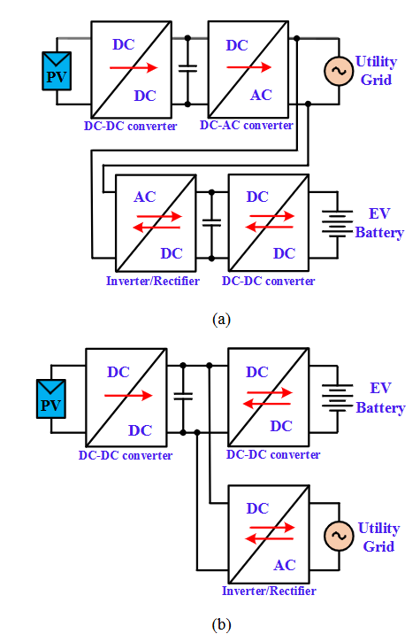
@inproceedings{chamarthi2024proposed, title={A proposed Cuk converter based dual input hybrid converter topology as EV charging station}, author={Chamarthi, Phani Kumar and Rahman, SM Imrat and Moghassemi, Ali and Timilsina, Laxman and Ciftci, Okan and Papari, Behnaz and Ozkan, Gokhan and Edrington, Christopher S}, booktitle={2024 IEEE transportation electrification conference and expo (ITEC)}, pages={1--6}, year={2024}}
Conference
Model-Based Active Thermal Management for Neutral-Point Clamped Power Converter with Adaptive Weight
S. M. I. Rahman, A. Moghassemi, L. Timilsina, P. Ramezani-Badr, Q. Zhu, R. Prucka, G. Ozkan, C. S. Edrington
2024 IEEE Transportation Electrification Conference and Expo (ITEC), pp. 1–6, 2024.
Permanent Magnet Synchronous Machines (PMSM) are commonly used for Electric Vehicles (EV) to benefit from their higher torque and efficiency, better performance, and heat dissipation capability than an asynchronous machine. The reliability of the power converters of PMSM drives is crucial for EV operation and is mainly related to the junction temperature of semiconductor devices. During operation, semiconductors experience periodic heating and cooling processes, which causes thermal stress. This stress causes failures of the devices and increases maintenance costs. This paper uses the Finite Control Set Model Predictive Control (FCS-MPC) approach to provide active thermal management (ATM) for a motor drive system. Active thermal management is a method to reduce the thermal cycling of the semiconductor device in order to improve the reliability of the motor drive system. The proposed method uses the FCS-MPC method to predict the three-level Neutral-Point Clamped (3L-NPC) converter’s electro-thermal characteristic to find its optimum state. The speed reference is converted to the reference current via Field-Oriented Control (FOC), and a Cauer-thermal network is used to predict the junction temperature of the semiconductors. The mission objectives vary during the EV operation; thus, adaptive weighting is applied to the objective function to control thermal cycling effectively. The preliminary results of the proposed method show that thermal cycling can be managed to improve reliability, and FCS-MPC is a powerful tool to provide multi-objective control for EV powertrains.
Graphical Abstract:
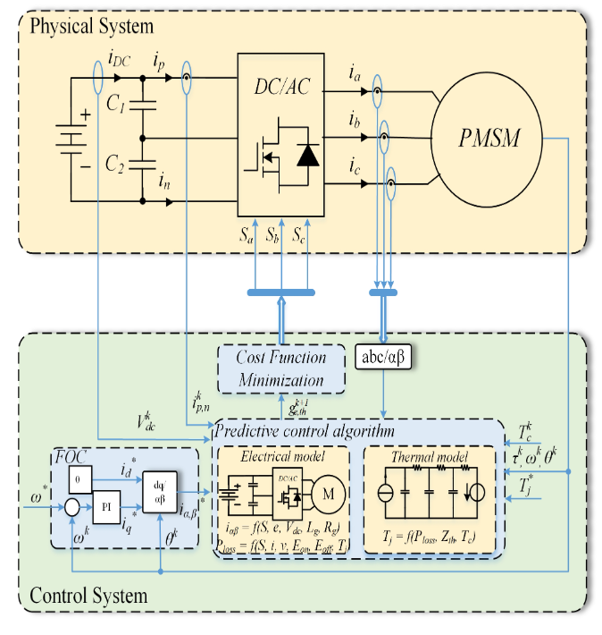
@inproceedings{rahman2024model, title={Model-based active thermal management for neutral-point clamped power converter with adaptive weight}, author={Rahman, SM Imrat and Moghassemi, Ali and Timilsina, Laxman and Ramezani-Badr, Payam and Zhu, Qilun and Prucka, Robert and Ozkan, Gokhan and Edrington, Christopher S}, booktitle={2024 IEEE Transportation Electrification Conference and Expo (ITEC)}, pages={1--6}, year={2024}}
Conference
A Novel Four Switch Transformerless Inverter with Step Up/Down Capability for PV Fed Grid Connected Systems
P. K. Chamarthi, A. Moghassemi, S. M. I. Rahman, L. Timilsina, O. Ciftci, E. Buraimoh, G. Ozkan, B. Papari, C. S. Edrington
2024 IEEE Transportation Electrification Conference and Expo (ITEC), pp. 1–5, 2024.
This paper presents a novel four-switch transformerless inverter (FSTI) topology for 1-ø grid-connected solar photovoltaic applications with reactive power capability. This proposed FSTI steps up/down the output voltage while completely suppressing the leakage/parasitic currents. Further, this inverter topology supports the on/off-grid application where active/reactive power requirement is essential. In addition, the FSTI comprises of least active power devices, lower voltage and current stresses of power devices, appropriate THD in grid current and better efficiency. The FSTI performance is evaluated for the 1-ø grid connected system. The FSTI is modeled using small signal analysis for the grid-connected inverter's stable operation and fast response. The FSTI is validated on a 500VA laboratory prototype for input PV voltages of 100V, 180V and grid voltage of 110Vrms. The experimental results are in good agreement with the theoretical analysis, which verifies the practicality of the proposed inverter. The FSTI demonstrates the DC to AC power transfer while stepping up/down the inverter’s output voltage with maximum efficiencies of 97% and 96% for the input voltages of 180V and 100V, respectively.
Graphical Abstract:
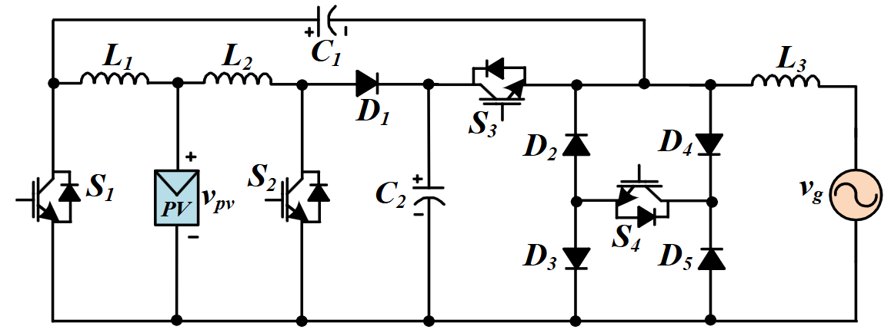
@inproceedings{chamarthi2024novel, title={A novel four switch transformerless inverter with step up/down capability for pv fed grid connected systems}, author={Chamarthi, Phani Kumar and Moghassemi, Ali and Rahman, SM Imrat and Timilsina, Laxman and Ciftci, Okan and Buraimoh, Elutunji and Ozkan, Gokhan and Papari, Behnaz and Edrington, Christopher S}, booktitle={2024 IEEE Transportation Electrification Conference and Expo (ITEC)}, pages={1--5}, year={2024}}
Conference
A Dual Energy Management for Hybrid Electric Vehicles
L. Timilsina, O. Ciftci, A. Moghassemi, E. Buraimoh, S. M. I. Rahman, P. K. Chamarthi, G. Ozkan, B. Papari, C. S. Edrington
2024 IEEE Transportation Electrification Conference and Expo (ITEC), pp. 1–6, 2024.
Electric vehicles (EVs) are gaining increasing recognition as an effective means to combat climate change and reduce greenhouse gas emissions. Lithium-ion batteries have emerged as the prevailing choice for energy storage in the automotive industry, offering superior attributes to alternative battery technologies. In the context of EVs and hybrid electric vehicles (HEVs), the singular reliance on a single battery unit presents a challenge. Any fault within the battery impacts the vehicle's performance and raises concerns about its overall reliability. In an effort to enhance vehicle reliability, this paper introduces a novel approach that involves the use of multiple smaller battery packs to collectively match the capacity of a single, larger battery pack. Also, to effectively distribute power between the vehicle’s internal combustion engine and the various smaller battery packs utilized in the HEV configuration, this study proposes a dual energy management (EM) system. The first EM system allocates power between the engine and the battery packs with the primary objective of minimizing fuel costs. Meanwhile, the second EM system is responsible for distributing power among the different battery packs, aligning with the power requirements determined by the first EM system. To assess the viability and effectiveness of the proposed energy management solution, numerical simulations are conducted using MATLAB/Simulink. Two distinct scenarios are explored wherein the total capacity and the remaining capacity, often referred to as the State of Health (SoH), are varied for each of the smaller battery packs. Through these simulations, this paper aims to evaluate the practicality and performance of the designed energy management system under varying conditions.
Graphical Abstract:
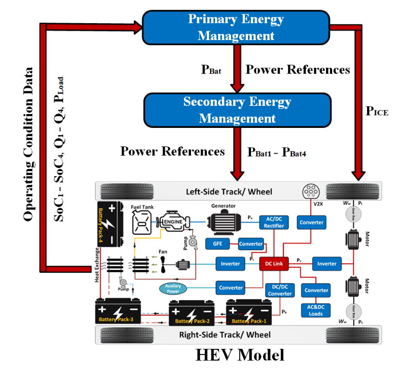
@inproceedings{timilsina2024dual, title={A dual energy management for hybrid electric vehicles}, author={Timilsina, Laxman and Ciftci, Okan and Moghassemi, Ali and Buraimoh, Elutunji and Rahman, SM Imrat and Chamarthi, Phani Kumar and Ozkan, Gokhan and Papari, Behnaz and Edrington, Christopher S}, booktitle={2024 IEEE Transportation Electrification Conference and Expo (ITEC)}, pages={1--6}, year={2024}}
Journal
An Advanced Meta Metrics-Based Approach to Assess an Appropriate Optimization Method for Wind/PV/Battery Based Hybrid AC-DC Microgrid
B. Papari, L. Timilsina, A. Moghassemi, A. A. Khan, A. Arsalan, G. Ozkan, C. S. Edrington
e-Prime - Advances in Electrical Engineering, Electronics and Energy, vol. 9, p. 100640, 2024.
This paper examines the effect of vehicle-to-grid (V2G) integration on battery aging and the economic viability of plug-in hybrid electric vehicles (PHEVs). Due to their energy storage potential,
Graphical Abstract:
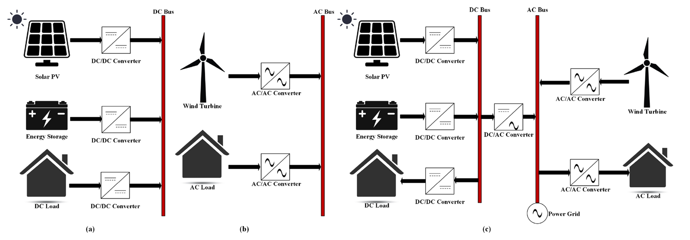
@article{papari2024advanced, title={An advanced meta metrics-based approach to assess an appropriate optimization method for Wind/PV/Battery based hybrid AC-DC microgrid}, author={Papari, Behnaz and Timilsina, Laxman and Moghassemi, Ali and Khan, Asif Ahmed and Arsalan, Ali and Ozkan, Gokhan and Edrington, Christopher S}, journal={e-Prime-Advances in Electrical Engineering, Electronics and Energy}, volume={9}, pages={100640}, year={2024}}
PhD Dissertation
Real-Time Degradation Abatement Framework for Energy Storage System in Automotive Application Using Data-Driven Approaches
Laxman Timilsina
Clemson University (Doctoral Dissertation), 2024.
The increasing popularity of electric vehicles (EVs) is driven by their compatibility with sustainable energy goals. However, the decline in the performance of energy storage systems, such as batteries, due to their degradation puts EVs and hybrid electric vehicles (HEVs) at a disadvantage compared to traditional internal combustion engine (ICE) vehicles. The batteries used in these vehicles have limited life. The degradation of the battery is accelerated by the operating conditions of the vehicle, which further reduces its life and increases the reliability and economic concerns for the vehicle’s operation.
The aging mechanism inside a battery cannot be eliminated but can be minimized depending on the vehicle’s operating conditions and different control mechanisms that can alter the operating conditions. Different operating conditions affect the aging mechanism differently. Knowing the factors and how they impact battery capacity is crucial for minimizing degradation. This dissertation presents the detailed degradation mechanism inside the battery and the major factors responsible for the degradation, along with their effects on the battery during the operation of EVs. Then, to abate the degradation mechanism, a prognostic-based control framework (PBCF) for HEVs is proposed. Also, this framework reduces the overall cost of operating HEVs by taking into account the degradation of the energy storage systems. The strategy utilizes a degradation forecasting model of energy storage systems to predict their degradation paths. Analytical and data-driven approaches are used to find the degradation path of the energy storage systems as follows:
• Markov Chain Model
• Neural Network Model
These two models employ distinct datasets to validate the feasibility of the proposed strategy. The predicted degradation rate is then used to control the HEV via its energy management (EM) system in order to reduce the degradation of energy storage systems. During the simulation, three distinct operating scenarios are developed to observe their effects on battery degradation and the response of the proposed control strategy PBCF.
Graphical Abstract:
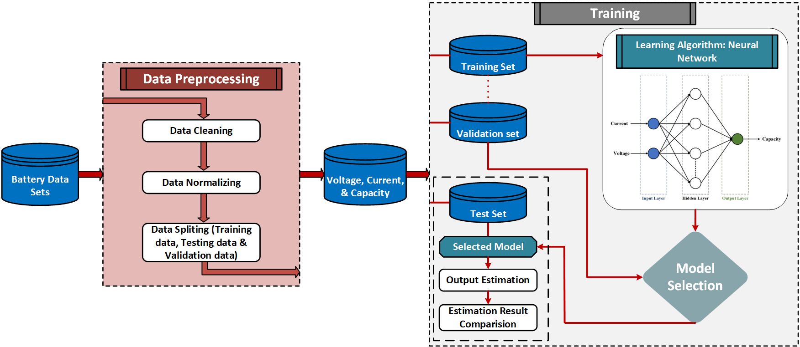
@phdthesis{timilsina2024real, title={Real-Time Degradation Abatement Framework for Energy Storage System in Automotive Application Using Data-Driven Approaches}, author={Timilsina, Laxman}, year={2024}, school={Clemson University}}
Journal
Emerging Trends and Challenges in Thermal Management of Power Electronic Converters: A State of the Art Review
S. M. I. Rahman, A. Moghassemi, A. Arsalan, L. Timilsina, P. K. Chamarthi, B. Papari, G. Ozkan, C. S. Edrington
IEEE Access, vol. 12, pp. 50633–50672, 2024.
Recently, the thermal management of power electronic converters has gained significant attention due to the continuous trend of developing very compact power electronic converters with high power density. With the evolution of power semiconductor devices, high operating temperatures and large thermal cycles have become possible, necessitating a significant improvement in thermal system designs. Researchers have made significant efforts to develop effective thermal management systems to improve the reliability and lifetime of power electronic converters. This article intends to present a thorough review of thermal management systems employed in power electronics cooling. The applied thermal management techniques have been reviewed from the perspective of electrical parameter regulation and heat dissipation control. Regulation of electrical parameters involves active thermal control, which is a method for controlling junction temperature and thermal cycling of power semiconductor devices. The active thermal control implementation processes reviewed in this article consist of increasing overload capacity, manipulating switching and conduction losses, employing modified modulation processes, balancing thermal stress at the converter level, and controlling thermal stress at the system level. Control of heat dissipation can be achieved through direct and indirect cooling of power electronic converters with air or liquid as the coolant. The effectiveness and implementation methods of these cooling techniques, such as channel cooling, phase change material-based cooling, immersion cooling, jet impingement and spray cooling, are reviewed in this paper. Moreover, performance-enhancing ideas and challenges for these techniques are discussed. The primary objective of this review paper is to bridge the existing gap in the literature by offering a comprehensive comparison of commonly employed thermal management techniques.
Graphical Abstract:
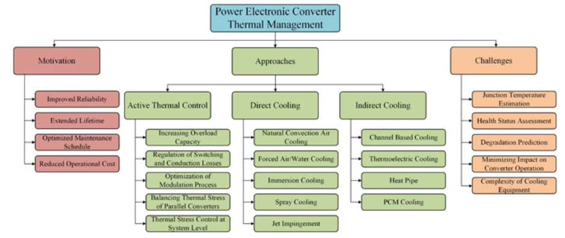
@article{rahman2024emerging, title={Emerging trends and challenges in thermal management of power electronic converters: A state of the art review}, author={Rahman, SM Imrat and Moghassemi, Ali and Arsalan, Ali and Timilsina, Laxman and Chamarthi, Phani Kumar and Papari, Behnaz and Ozkan, Gokhan and Edrington, Christopher S}, journal={IEEE Access}, volume={12}, pages={50633--50672}, year={2024}}
Conference
Impact of Vehicle-to-Grid (V2G) on Battery Degradation in a Plug-in Hybrid Electric Vehicle
L. Timilsina, A. Moghassemi, E. Buraimoh, A. Arsalan, P. K. Chamarthi, G. Ozkan, B. Papari, C. Edrington
WCX SAE World Congress Experience, 2024.
Electric vehicles (EVs) are becoming increasingly recognized as an effective solution in the battle against climate change and reducing greenhouse gas emissions. Lithium-ion batteries have become the standard for energy storage in the automobile industry, widely used in EVs due to their superior characteristics compared to other batteries. The growing popularity of the Vehicle-to-grid (V2G) concept can be attributed to its surplus energy storage capacity, positive environmental impact, and the reliability and stability of the power grid. However, the increased utilization of the battery through these integrations can result in faster degradation and the need for replacement. As batteries are one of the most expensive components of EVs, the decision to deploy an EV in V2G operations may be uncertain due to the concerns of battery degradation from the owner’s perspective. This paper examines the degradation of the battery employed in Plug-in Hybrid Electric Vehicles (PHEVs) for both V2G connection and its typical operating schedule. For assessing the degradation in driving scenarios, the US06 drive cycle is employed. On the other hand, for the V2G scenario, a 10 kW bidirectional charger is utilized. The charger discharges the battery up to 20 kWh in 2 hours or up to 60% state of charge (SoC) and subsequently charges it back to 90% SoC at a constant 1C rate. This V2G setup simulates the discharging and charging patterns typically observed in real-world scenarios and allows for evaluating battery performance and degradation under such conditions. Finally, an economic analysis is conducted by considering the capacity loss of the battery resulting from the V2G connection. This study considers the incentives obtained through the V2G connection, providing an assessment of the economic viability and potential benefits associated with utilizing the vehicle in V2G applications.
Graphical Abstract:
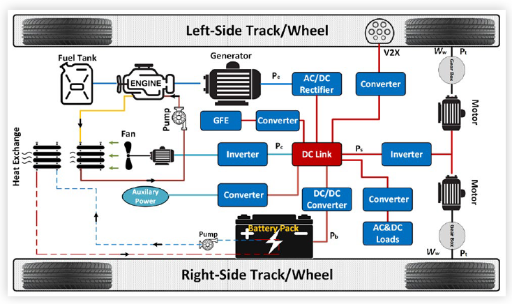
@inproceedings{timilsina2024impact, title={Impact of vehicle-to-grid (V2G) on battery degradation in a plug-in hybrid electric vehicle}, author={Timilsina, Laxman and Moghassemi, Ali and Buraimoh, Elutunji and Arsalan, Ali and Chamarthi, Phani Kumar and Ozkan, Gokhan and Papari, Behnaz and Edrington, Christopher}, booktitle={WCX SAE World Congress Experience}, year={2024}}
Conference
Machine Learning Approach for Open Circuit Fault Detection and Localization in EV Motor Drive Systems
A. Arsalan, B. Papari, S. M. I. Rahman, L. Timilsina, A. Moghassemi, G. Muriithi, G. Ozkan, C. Edrington, E. Buraimoh
WCX SAE World Congress Experience, 2024.
Semiconductor devices in electric vehicle (EV) motor drive systems are considered the most fragile components with a high occurrence rate for open circuit fault (OCF). Various signal-based and model-based methods with explicit mathematical models have been previously published for OCF diagnosis. However, this proposed work presents a model-free machine learning (ML) approach for a single-switch OCF detection and localization (DaL) for a two-level, three-phase inverter. Compared to already available ML models with complex feature extraction methods in the literature, a new and simple way to extract OCF feature data with sufficient classification accuracy is proposed. In this regard, the inherent property of active thermal management (ATM) based model predictive control (MPC) to quantify the conduction losses for each semiconductor device in a power converter is integrated with an ML network. This recurrent neural network (RNN)-based ML model as a multiclass classifier localizes the faulty switch based on the dynamics associated with conduction losses as reliable and feature-rich data. The presented approach utilizes the controller data with no additional computational load to compute the feed-in data for the ML model and no extra hardware requirements. The proposed data-driven approach, with an accuracy of 99% for distinct hyperparameters and testing datasets, proves to be a promising solution for OCF DaL.
Graphical Abstract:
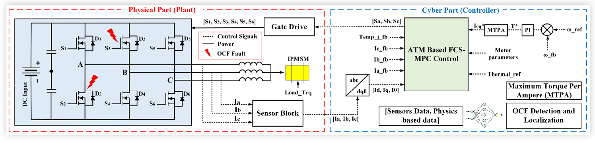
@inproceedings{arsalan2024machine, title={Machine learning approach for open circuit fault detection and localization in EV motor drive systems}, author={Arsalan, Ali and Papari, Behnaz and Rahman, SM Imrat and Timilsina, Laxman and Moghassemi, Ali and Muriithi, Grace and Ozkan, Gokhan and Edrington, Christopher and Buraimoh, Elutunji}, booktitle={WCX SAE World Congress Experience}, year={2024}}
Journal
A Real-time Prognostic-based Control Framework for Hybrid Electric Vehicles
L. Timilsina, P. H. Hoang, A. Moghassemi, E. Buraimoh, P. K. Chamarthi, G. Ozkan, B. Papari, C. S. Edrington
IEEE Access, vol. 11, pp. 127589–127607, 2023.
The increasing popularity of electric vehicles is driven by their compatibility with sustainable energy goals. However, the decline in the performance of energy storage systems, such as batteries, due to their degradation puts electric vehicles and hybrid electric vehicles at a disadvantage compared to traditional internal combustion engine vehicles. This paper presents a prognostic-based control framework for hybrid electric vehicles to reduce the cost of operating hybrid electric vehicles by considering the degradation of energy storage systems. The strategy utilizes a degradation forecasting model of electrical components to predict their degradation pattern and uses the prediction to control hybrid electric vehicles via their energy management systems to reduce the degradation of components. A real-time controller hardware-in-the-loop is set up to run the proposed strategy. An hybrid electric vehicle model is developed on Typhoon (i.e., a real-time simulator), which is connected to two layers, energy management and degradation forecasting layer, deployed in Raspberry Pis, respectively. All these components are communicated through CAN communication, where the actual operating condition of the vehicle is sent from Typhoon to each Raspberry Pis to implement the proposed control strategy. With this approach, the cost of operating hybrid electric vehicles can be reduced, making them more competitive than their combustion engine counterparts shown in both numerical simulations and the CHIL experiment.
Graphical Abstract:
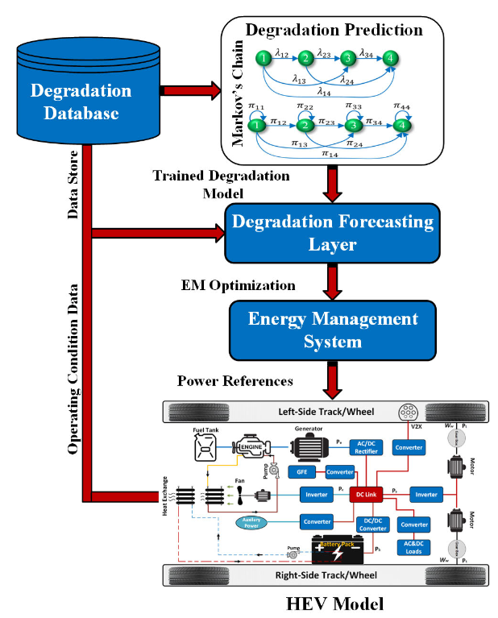
@article{timilsina2023real, title={A Real-time Prognostic-based Control Framework for Hybrid Electric Vehicles}, author={Timilsina, Laxman and Hoang, Phuong H and Moghassemi, Ali and Buraimoh, Elutunji and Chamarthi, Phani Kumar and Ozkan, Gokhan and Papari, Behnaz and Edrington, Christopher S}, journal={IEEE Access}, volume={11}, pages={127589--127607}, year={2023}}
Preprint / TechRxiv
A Real-time Degradation Abatement Technique in Hybrid Electric Vehicle Using Data-Driven Methods
L. Timilsina, P. H. Hoang, A. Moghassemi, E. Buraimoh, A. Arsalan, S. M. I. Rahman, G. Ozkan, B. Papari, C. S. Edrington
TechRxiv Preprint, 2023.
The performance decline of Lithium-ion batteries due to degradation poses challenges for electric vehicles (EVs) and hybrid electric vehicles (HEVs) compared to traditional internal combustion engine vehicles. This research paper introduces a novel control architecture, named as Prognostic-Based Control Framework (PBCF), specifically designed for HEVs. The objective of PBCF is to minimize the overall operating costs of HEVs by considering the degradation of batteries used in the vehicle. The strategy leverages a degradation forecasting (DF) model for the battery to anticipate its degradation rate. The predicted degradation information is then utilized within the energy management (EM) system of the HEV to mitigate battery degradation. To predict the battery's capacity loss during vehicle operation, three different neural networks, namely the feedforward neural network (FNN), recurrent neural network (RNN), and deep neural network (DNN), are employed. The proposed strategy is implemented and validated under two different simulation environments. First in MATLAB/Simulink, and second, a real-time controller hardware-in-the-loop (CHIL) is set up. For the CHIL experiment, an HEV model is developed on Typhoon, a real-time simulator that communicates with other PBCF layers: the EM layer and the DF layer, which are deployed in Raspberry Pis, respectively. The communication between all these components occurs via the CAN protocol. The actual vehicle's operating conditions are transmitted from Typhoon to each Raspberry Pi and vice versa to facilitate the implementation of the proposed control strategy. The results from both numerical simulations and CHIL experiments demonstrate that this framework can effectively reduce the degradation of the battery and overall operating costs of the vehicle.
Graphical Abstract:
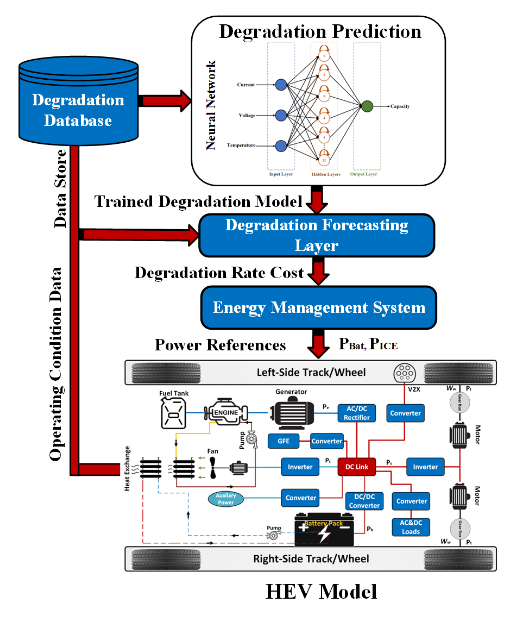
@article{timilsina2023real, title={A real-time degradation abatement technique in hybrid electric vehicle using data-driven methods}, author={Timilsina, Laxman and Hoang, Phuong H and Moghassemi, Ali and Buraimoh, Elutunji and Arsalan, Ali and Rahman, SM Imrat and Ozkan, Gokhan and Papari, Behnaz and Edrington, Christopher S}, year={2023}, publisher={TechRxiv}}
Journal
Degradation Abatement in Hybrid Electric Vehicles Using Data-Driven Technique
L. Timilsina, P. H. Hoang, A. Arsalan, P. R. Badr, G. Ozkan, B. Papari, C. S. Edrington
Transportation Research Procedia, vol. 70, pp. 52–60, 2023.
Electrified transportation is considered one of the most feasible technological solutions to address the growing climate change challenges in the electric transportation sector. However, the batteries used in electric vehicles (EVs) and hybrid electric vehicles (HEVs) have limited life. The degradation of the battery is accelerated by the operating conditions of the vehicle, which further reduces its life and increases the reliability and economic concerns for the vehicle's operation. This paper provides a technique to minimize the degradation of the battery used in HEVs called a prognostic-based control framework. A data-driven method is used to predict the degradation path of the battery. Depending on the degradation, the control strategy of the system is reconfigured to reduce the degradation and increase the battery's operating life.
Graphical Abstract:
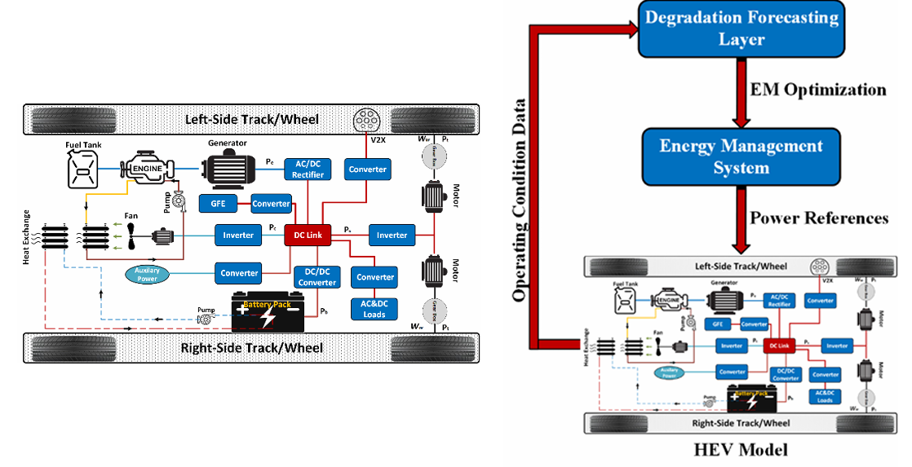
@article{timilsina2023degradation, title={Degradation abatement in hybrid electric vehicles using data-driven technique}, author={Timilsina, Laxman and Hoang, Phuong H and Arsalan, Ali and Badr, Bill R and Ozkan, Gokhan and Papari, Behnaz and Edrington, Christopher S}, journal={Transportation Research Procedia}, volume={70}, pages={52--60}, year={2023}}
Journal
Cyber Attack Detection and Classification for Integrated On-Board Electric Vehicle Chargers Subject to Stochastic Charging Coordination
A. Arsalan, L. Timilsina, B. Papari, G. Muriithi, G. Ozkan, P. Kumar, C. S. Edrington
Transportation Research Procedia, vol. 70, pp. 44–51, 2023.
Cyber-physical system (CPS) of EV on-board chargers is connected to an IOT-based communication network for coordinated control, which is highly vulnerable to cyber-attacks. This charging coordination control incorporating hundreds of EVs and associated charging sessions, feed in a stochastic reference input to energy management system (EMS) of on-board EV chargers. Hence, under these varying operating conditions, a pure data-driven-based detection model can experience a disturbance detection failure. Therefore, a model predictive control (MPC) based machine learning (ML) network, integrated with a residual based training data pre-processing is proposed in this paper. This MPC based ML approach can effectively detect a tempered response while addressing the aleatory behaviour of cooperative control with enhanced disturbance detection accuracy. The proposed model utilizing various system level signals can also efficiently classify a normal condition, cyber-attack, and a physical fault. The superior performance of the proposed approach is validated by using different case study scenarios of training datasets.
Graphical Abstract:
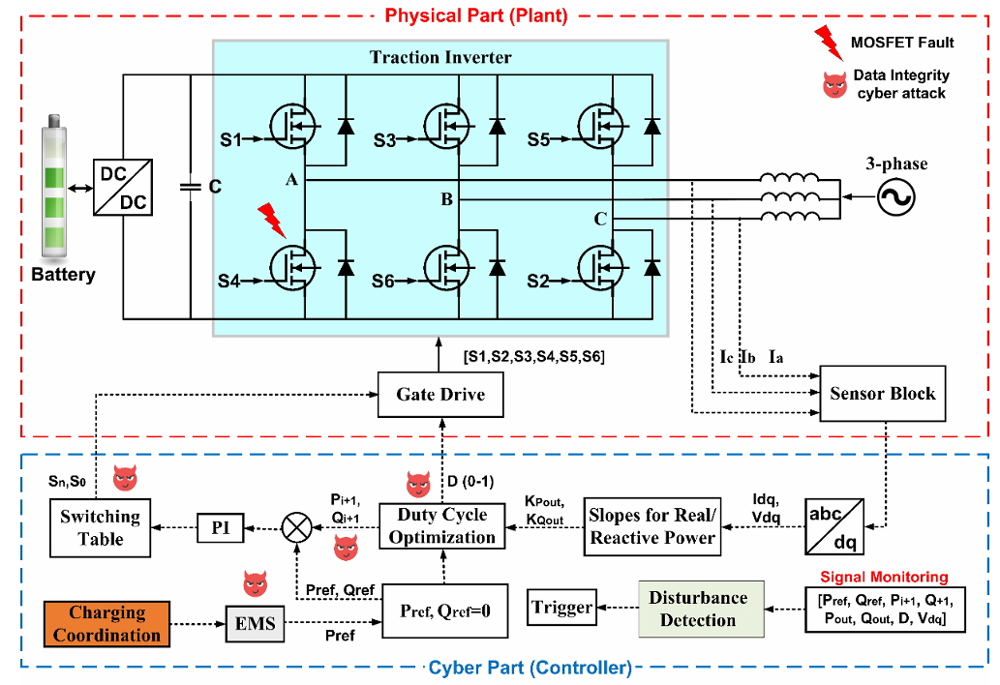
@article{arsalan2023cyber, title={Cyber attack detection and classification for integrated on-board electric vehicle chargers subject to stochastic charging coordination}, author={Arsalan, Ali and Timilsina, Laxman and Papari, Behnaz and Muriithi, Grace and Ozkan, Gokhan and Kumar, Phani and Edrington, Christopher S}, journal={Transportation Research Procedia}, volume={70}, pages={44--51}, year={2023}}
Journal
Overview of Interface Algorithms, Interface Signals, Communication and Delay in Real-Time Co-Simulation of Distributed Power Systems
E. Buraimoh, G. Ozkan, L. Timilsina, P. K. Chamarthi, B. Papari, C. S. Edrington
IEEE Access, vol. 11, pp. 103925–103955, 2023.
In recent years, there has been growing research interest in the virtual integration of hardware and software assets across different geographical locations. However, achieving joint real-time simulation in virtually connected laboratories presents several challenges that must be addressed. One critical aspect involves selecting suitable interface algorithms to conserve energy, ensure signal decomposition, and reconstruct data accurately, thereby preventing distortions. Additionally, communication latencies must be taken into account to maintain experiment fidelity. The establishment of fast and reliable communication between real-time simulators in different laboratories through coupling interfaces, is of utmost importance for successful real-time co-simulation. Nevertheless, assuming the constant availability of reliable and delay-free communication is unrealistic, which can lead to performance degradation and system instability. These requirements pose significant obstacles to implementing virtual integration involving various real-time simulators and hardware-in-the-loop setups across diverse laboratories. The real-time co-simulation of power systems, in particular, is highly susceptible to ineffective interface algorithms, signal decomposition, and reconstruction, as well as communication delays, potentially causing loss of synchronism and negatively impacting simulation fidelity. Consequently, these limitations render such setups unsuitable for dynamic and transient studies. In light of these challenges, this paper aims to provide an overview of interface algorithms, signal decomposition and reconstruction techniques, communication protocols, and delay compensation approaches. The goal is to ensure system fidelity, enhance coupling point modeling, and improve the accuracy of real-time co-simulation in virtual environments across long distances while preserving ongoing research confidentiality, safeguarding intellectual property, and facilitating collaborative research.
Graphical Abstract:
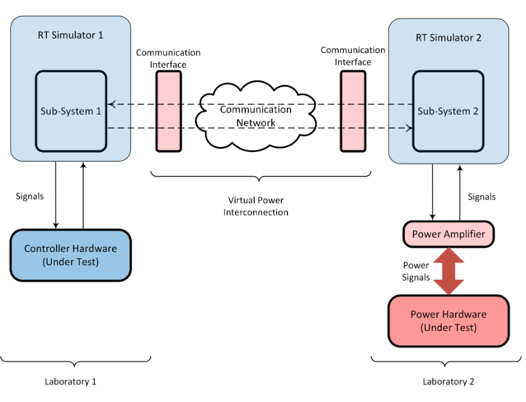
@article{buraimoh2023overview, title={Overview of interface algorithms, interface signals, communication and delay in real-time co-simulation of distributed power systems}, author={Buraimoh, Elutunji and Ozkan, Gokhan and Timilsina, Laxman and Chamarthi, Phani Kumar and Papari, Behnaz and Edrington, Christopher S}, journal={IEEE Access}, volume={11}, pages={103925--103955}, year={2023}}
Journal / SAE
A Novel 1-ϕ Cuk Based On-Board Electric Vehicle Charger with Minimal Number of Power Components
P. K. Chamarthi, C. Edrington, A. Arsalan, L. Timilsina, B. Papari, G. Ozkan, A. Moghassemi
SAE Technical Paper 01-1686, 2023.
This paper proposes a novel 1-ϕ, Cuk based on-board electric vehicle (EV) charger with least power components. The proposed EV charger has a special feature to achieve power factor correction (PFC) at AC grid without requirement of the grid voltage and current sensors which cuts the cost and increases the power density of the EV charger along with robustness to noise. The automatic PFC at AC grid is accomplished by operating the output DC inductor in discontinuous conduction mode (DCM). The proposed EV charger necessitates a minimal number of power components for positive and negative half cycles of AC grid which improves the overall efficiency of the system. This is possible due to the combination of inverting and non-inverting Cuk converters are used for each half cycle of the AC grid. Further, the presence of output inductor in the EV charger reduces the ripples in the output current which is not common with all the existing chargers in the literature. In addition, the control of charger is simple, and easy to implement with only battery current sensor based current control. The proposed charger configuration has lower voltage stress across the power switches and diodes in comparison with the existing charger configurations. The theoretical concept is validated through experimental studies which prove the superior execution of PFC control of the 2kW EV charger. The various performance factors such as power factor at AC grid is 0.996 and total harmonic distortion (THD) in the AC grid current is
Graphical Abstract:
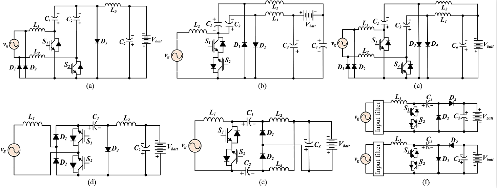
@article{chamarthi2023novel, title={A novel 1-$\phi$ cuk based on-board electric vehicle charger with minimal number of power components}, author={Chamarthi, Phani Kumar and Edrington, Christopher and Arsalan, Ali and Timilsina, Laxman and Papari, Behnaz and Ozkan, Gokhan and Moghassemi, Ali}, journal={SAE Technical Paper}, pages={01--1686}, year={2023}}
Conference
Model Free Time Delay Compensation for Damped Impedance Method Interfaced Power System Co-Simulation Testing
E. Buraimoh, G. Ozkan, L. Timilsina, A. Arsalan, B. Papari, P. K. Chamarthi, C. Edrington
Energy & Propulsion Conference & Exhibition, 2023.
The joint real-time co-simulation, which involves the virtual integration of laboratories located in different locations, is met with challenges, especially the communication latency or delay, which significantly affects co-simulation accuracy and system stability. The real-time power system co-simulation is particularly susceptible to these delays and could lose synchronism, which affects the simulation fidelity and limits dynamic and transient studies. This paper proposes a model-free framework for predicting and compensating delays in the virtual integration of real-time co-simulators through the damped impedance interface method to address this issue. The framework includes an improved co-simulation interface algorithm called the Damping Impedance Method (DIM) and a model-free predictor system designed to predict and compensate for delays without decomposing and reconstructing signals at coupling points. The predictor systems use one design parameter and two design parameters to achieve delay compensation through a first-order time delay compensation system. The framework enhances the accuracy and stability of the system, making it suitable for dynamic and transient studies.
Graphical Abstract:
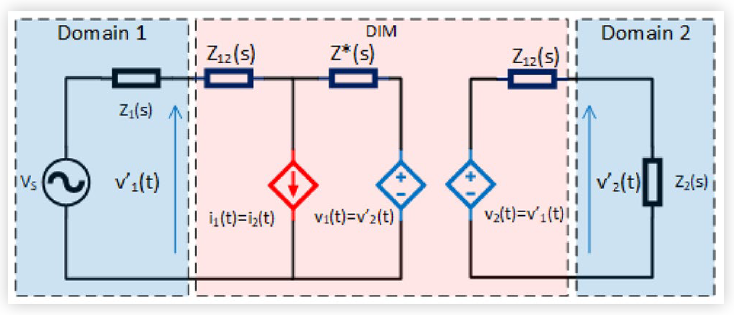
@inproceedings{buraimoh2023model, title={Model free time delay compensation for damped impedance method interfaced power system co-simulation testing}, author={Buraimoh, Elutunji and Ozkan, Gokhan and Timilsina, Laxman and Arsalan, Ali and Papari, Behnaz and Chamarthi, Phani Kumar and Edrington, Christopher}, booktitle={Energy \& Propulsion Conference \& Exhibition}, year={2023}}
Journal
Battery Degradation in Electric and Hybrid Electric Vehicles: A Survey Study
L. Timilsina, P. R. Badr, P. H. Hoang, G. Ozkan, B. Papari, C. S. Edrington
IEEE Access, vol. 11, pp. 42431–42462, 2023.
The lithium-ion batteries used in electric vehicles have a shorter lifespan than other vehicle components, and the degradation mechanism inside these batteries reduces their life even more. Battery degradation is considered a significant issue in battery research and can increase the vehicle’s reliability and economic concerns. This study highlights the degradation mechanisms in lithium-ion batteries. The aging mechanism inside a battery cannot be eliminated but can be minimized depending on the vehicle’s operating conditions. Different operating conditions affect the aging mechanism differently. Knowing the factors and how they impact battery capacity is crucial for minimizing degradation. This paper explains the detailed degradation mechanism inside the battery first. Then, the major factors responsible for the degradation and their effects on the battery during the operation of electric vehicles are discussed. Also, the different techniques used to model the degradation of a battery and predict its remaining life are explained in-depth, along with the techniques to abate the aging process. Finally, this study focuses on the research gaps, difficulties in predicting the lifetime, and reducing the degradation mechanism of a battery used in electric vehicles.
Graphical Abstract:
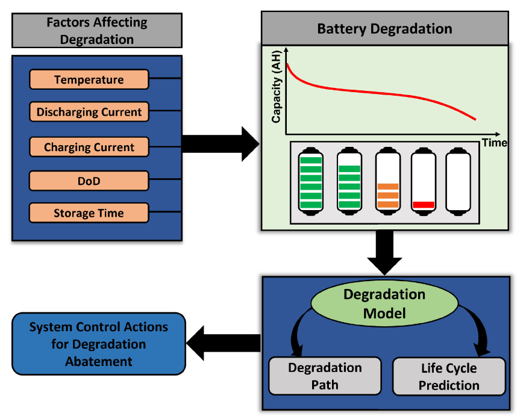
@article{timilsina2023battery, title={Battery degradation in electric and hybrid electric vehicles: A survey study}, author={Timilsina, Laxman and Badr, Payam R and Hoang, Phuong H and Ozkan, Gokhan and Papari, Behnaz and Edrington, Christopher S}, journal={IEEE Access}, volume={11}, pages={42431--42462}, year={2023}}
Journal
Integrating Degradation Forecasting into Distribution Grids’ Advanced Distribution Management Systems
P. H. Hoang, G. Ozkan, P. R. Badr, L. Timilsina, B. Papari, C. S. Edrington
International Journal of Electrical Power & Energy Systems, vol. 150, p. 109071, 2023.
Advanced distribution management systems (ADMSs) are considered tools for deploying control and management strategies to address challenges in future distribution grids populated with distributed energy resources (DERs). This work presents a framework to integrate a degradation forecasting (DF) layer into ADMSs. Based on observations of considered DERs’ degradation behaviors, a load-dependent degradation model is constructed and integrated into a dynamical Markov chain-based degradation prediction model. Multiple sources of data can be used to train the Markov prediction model, and then Evidence Theory (ET) is used to fuse predicted results from the prediction model to enhance the reliability of the prediction model. Then, the predicted results are used to adjust energy management (EM), which is a component of the ADMS concept, to abate the degradation of components with higher degradation costs. The proposed strategy is verified on the IEEE 33 bus system by numerical simulations. In addition, controller-hardware-in-the-loop (CHIL) experimentation for the proposed scheme is implemented. Both the numerical simulations and CHIL experimentation show operation cost savings for the studied system.
Graphical Abstract:
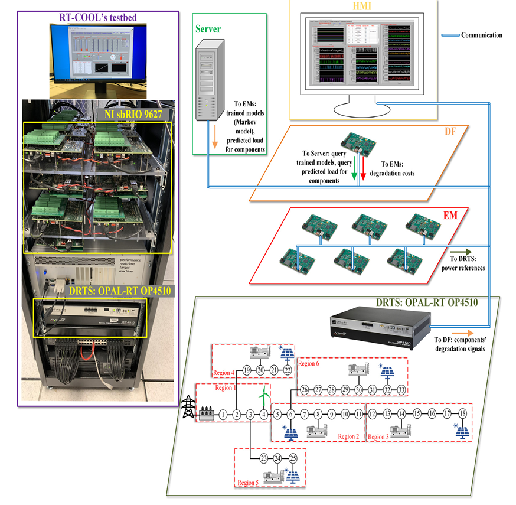
@article{hoang2023integrating, title={Integrating degradation forecasting into distribution grids’ advanced distribution management systems}, author={Hoang, Phuong H and Ozkan, Gokhan and Badr, Payam Ramezani and Timilsina, Laxman and Papari, Behnaz and Edrington, Christopher S}, journal={International Journal of Electrical Power \& Energy Systems}, volume={150}, pages={109071}, year={2023}}
Conference
A Prognostic Based Control Framework for Hybrid Electric Vehicles
P. H. Hoang, G. Ozkan, P. Badr, L. Timilsina, C. Edrington
WCX SAE World Congress Experience, 2022.
Electrified transportation has received significant interest recently because of sustainable and clean energy goals. However, the degradation of electrical components such as energy storage systems raises system reliability and economic concerns. In this paper, a prognostic-based control strategy is proposed for hybrid electric vehicles (HEVs) to abate the degradation of energy systems. Degradation forecasting models of electrical components are developed to predict their degradation paths. The predicted results are then used to control HEVs in order to reduce the degradation of components.
Graphical Abstract:
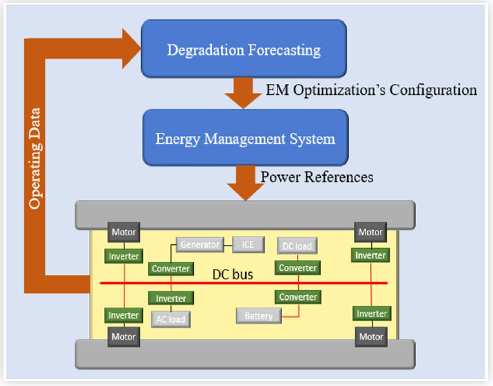
@inproceedings{hoang2022prognostic, title={A prognostic based control framework for hybrid electric vehicles}, author={Hoang, Phuong H and Ozkan, Gokhan and Badr, Payam and Timilsina, Laxman and Edrington, Christopher}, booktitle={WCX SAE World Congress Experience}, year={2022}}
Journal
Universal Power Converter For Microhydro Power Plant
L. Timilsina, P. Acharya, R. P. Jnawali, S. Paudel, I. Tamrakar, N. P. Gyawali
Zerone Scholar, vol. 1, no. 1, pp. 47–51, 2016.
With increasing trends of non-linear and reactive loads even in Micro Hydro Power (MHP) Scheme, problems due to harmonic current and reactive power balance is increasing. The conventional Electronic Load Controller (ELC) for speed control does not take care of effect of un-balanced consumer’s load. The conventional ELC consumes some reactive power due to delayed chopping of waveform of current through ballast load of ELC. This paper proposes an advanced Electronic Universal Controller which takes care of frequency control, reactive power balance and voltage control, harmonic current compensation and un-balanced load compensation by a single compensator. The proposed system operates on the basis of instantaneous pq theory by which the harmonics and neutral current is suppressed and further the outer control scheme is applied for the frequency balance and reactive power compensation.
Graphical Abstract:

@article{timilsina2016universal, title={Universal Power Converter For Microhydro Power Plant}, author={Timilsina, Laxman and Acharya, Prakash and Jnawali, Ram Prasad and Paudel, Sushil and Tamrakar, Indraman and Gyawali, Netra Prasad}, journal={Zerone Scholar}, volume={1}, number={1}, pages={47--51}, year={2016}}